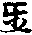

四分律鈔簡正記卷第六(從羯磨篇畢結界篇)
○第五羯磨篇
大分為二。初牒名二釋。初云羯磨至五者。先辨來意。已上四篇。明能秉之僧。既彰所秉之法。未練。然於羯磨非相難分。剛骨混然。緣本相濫。若不細辨。何得委知。故製此篇。以呈無或心。釋文名者。通辨二字。亦是旁破古非。古人云。單白白四即名羯磨。對首心念別人所秉。不名羯磨。今云。始從心念。終乎白四。俱名羯磨。此中總収一百八十四法。如非之相。故云通辨也。羯磨二字。翻譯解判。如下自述。或有本中有相字。即相狀也。篇者章品嘉名。第五者次前之數也。注文云。明了論疏翻方為業者。謂真諦疏中。正翻為業。即是業聚相應夅處業聚者。即羯磨法聚也。所作是業等者。即約羯磨所辨前事。故名為業。亦可義翻為所作。反解上來業也。猶似盡人以盡為業。則以筆墨五彩填治。方可成就於本業。今此亦然。須得人僧界等。離非就如。所作成就。方可成於僧家所作之業。故將所作解其業用。問既云羯磨翻為業者。此何不言業篇耶。答業字有濫。故存梵名。謂世間作業不出四種。一士。二農。三工。四商。謂有官。官者曰士。耕犂鋤褥者曰農。巧藝者曰工。典販者曰商。已上四種。皆云為業。今標業名即濫上。諸云俗業鏡水。亦可恐生俗疑。將謂沙門由有業也。即濫他三途惡業。故存梵語。亦生善也。百論等者。准此論中。一向呼為事也。若約義求翻為辨事者。此由是古人解也。何以得知。故羯磨疏云。自古至今翻為辨事。今師承上語勢下遂解云施造遂法。必有成濟之功。焉謂此羯磨疏。能辨生善滅惡之事。施設造作。必有成就達濟之功能也。
釋中總意云。僧至聞者。僧為秉御之人。此句屬人也。觀其文勢。亦似結前意也。秉法制御也。所統其准。羯磨者。屬法也。似生起下文之意。統由通也。其准二字。偏局之譚。方能枝群述之重累者。方由則也。拔者濟拔也。群述即一切有情之類也。皆善作惡。名為述也。重累者。重字。玄記平呼。謂業道上更加違制之罪累。故云重累。法寶上聲呼。謂初篇四重無間之愆。此羯磨法能拔。故羯磨疏云。滅惡之大勿過懺重。若不洗過。生報便招。由茲羯磨拔濟也(二解俱正)。出界分之深根者。界者三界。分者分齊。欲色無色。煩惱輕重。多少不同。名為界分。皆由三毒為本□曰深根。今出家之人。受戒之後。依戒修行。翻三毒成三善。離於界繫。皆由羯磨之力。故云出界(云云)。德寔無涯者。謂羯磨有出生死之德。寔由實也。此德遍於法界。故曰無涯。一者困時無涯等。虗空遍法界。情非二境。皆發得戒。四智菩薩。法身成就。一一之相。與虗空等。二果時無涯。量同太虗。共佛齊位也。威難與大者。如國王之威。最大放赦。能除現世之愆。無間之業。佛不能救。羯磨懺除能令九百二十一億六十千歲。阿鼻地獄苦報。欲然清淨。如是威故。難與大也。
而世尊栖光等者。既由已也。栖息也。如鳥暮宿於林日栖(栖字從木。木上能栖。今從手者非也)。欲明如來晦跡。雙林息身智之光將二千載。故云既久也。謂佛雖滅。遺法尚在。可得而聞。故涅槃經云。如來於雙樹間。入大寂定。眾不見故。唯有三藏教法。遠流末裔。猶可得聞也。云但至焉者。上二句標身心。非下兩句辨行失。但為二字。偏局之詞。陶者患也。染習也。俗風者。名利五塵之景也。情流鄙薄者。情壞也。流浪也。鄙嗇(所力交)受也。薄淡也。謂身喜陶染名利。俗風懷情之中。於佛法多愛淡薄也。言成瓦礫者。碎石曰礫。發言無准不生。貴重教法之心。喻同瓦礫。妄參真淨之文者。作白如白日真。不容七非石淨。今以瓦礫之言。妄秉真淨之教也。行乃塵庸者。塵染庸常與俗同業虗沾在三之故者。古記云。君父師為三也。玄云。和上戒師教授師為三也。已上二說。初釋太疎。次解太局。今依法寶。約三寶為三。上既云行乃塵庸虗沽。在三寶之中。占他一僧寶之數也。致使羯磨之教。無辨事之功。此事白然不成。故在納非之科目。並由人法等者。人不學戒律。是人無宗。不依三行。於束身口七支。是人無轄。不依羯磨綱骨。是法無宗。顛倒增減。文句秉之。是法轄人之與法。得失不分。事之成不。混同一致。故同歸焉。
云故律云乃至學者。引文證也。文有二。初證非。二勸學。初文四分五十七云。時佛告諸比丘。汝等諦聽。若比丘說。相似文句。違法毗尼。此比丘。令多人不得利益。作諸苦業。以滅正法。若比丘隨順文句。勿令增減違法毗丘尼。當如是學。諸比丘聞歡喜受持(上律文)。多見人破句讀文。失於義味。今重標舉。鈔云。若作羯磨(此都舉起)。不如白法作白(一句)。不如羯磨法作羯磨。二句違法毗尼者。有人云。須知此段具二毗尼。作白不如白。作羯磨不如羯磨。此違毗尼。漸漸令戒毀壞。以滅正法。此是違法毗尼也。當如是學者。結勸也。
云雖至非法者。欲釋此文。先且准起云。前足數法中。僧通真偽。真者本分成法。偽者體非但約相淨。不知亦得成法。今法莫不例。人通於真偽。已不鈔答云。雖復等是也。亦由似也。似□一字便是非法。不論知與不知。冥然被事不就。鏡水大德云。不但脫□一字即成濫非。或呼喚不真。亦名非法也。如剛骨中。初句聽字本。合去聲呼。是此舉耳勑聽即耳識家所得。次句聽字理合乎呼。謂聽許所作之事。即意識所得。今若呼召乖違。亦成非法。思之。
云今至式者。今欲尅剪浮言。玄云。今欲尅定剛骨之教。剪截增減浮言。法寶云。不爾。謂古人每於一番羯磨。皆辨七非。是浮言也。發揚聖教者。謂今師隨順文句。如白作白。即是發揚聖教。統辨進不者。統由通也。通辨一百八十四番羯磨。由漸總具十門。故云統辨。具十為進。不具十為不。總識科分者。約四現前說也。謂法事人界。將一人法字。収一切法。將一事字。攝一切事。將一今人字。攝一切人。將一今界字。攝一切界。故云總識科分也。後有事條案文准式者。玄云。若約法下。竪則三。橫則八。就緣約相一百八十四。並名為法。人界事倒然如是事條則是後有及七非。并一一牒羯磨而解。皆按律文。故云准式(已上記文)。鏡水大德。不許此解。謂本來立篇。意却向律文。上說全不相當。今云後有事條者。南山既刪剪古人浮濫之言。尅定律文真淨剛骨。先列十緣。次明四現前。并曲解羯磨。後作三法科。簡記已後。或有所被。事條起來。但按此一篇鈔文。以為大途準繩法式。須怙抄文釋義。不開他律文之事。舉例由如受戒篇。總意云。至機依准相似可以思之。
開章中。云就至磨者。列科但讀文過未勞。解說也。
云初至門者。謂於具緣門中。故云初中統明羯磨。由漸者。通明一百八十四法想有由漸。有人除心念。對首外說通明者非也。且分十門者。舉數也。
云一法至定者。古來無此緣。何以得知。故羯磨疏云。諸家皆略。此緣律制稱量。豈專壇立。法不孤起。成必在緣。故前標舉。思擇是非。故云搆量前事。如秤稱雜物。斗量五糓之類。斯皆是審定之義。今此亦然也。問所為之事。未審有幾種耶。鈔文答云。事則有三種。即人法事也。人謂受戒懺罪者。羯磨疏云。然雖所受法。應是法収。但此法起時依人故。從能受者立號法。謂說戒自恣者。羯磨疏云。然說恣等非淨。不預理在為人僧別通行遵教法故。專在法也。事謂地衣等者。羯磨疏云。地即結界淨地等。衣即受功德衣。結攝衣界。雖人法事三種不同。皆是稱量前事。或具或單乍離乍合者。諸記解判。取意不同。繁而不緣。今依搜玄正解。或者不定之譚。謂人法事。三。一序皆作名或。具三中。但作一名單。乍者忽也。若准羯磨疏云。時離時合。准就懺罪中解同篇。合懺名時合。別懺名時離。且具中乍離者。三中各作一也。乍合者三中各作多也。單中乍離者。一中只作一乍合者。一中自作多。如結界是事。於此事中。結多種界。是必先早陳是非須定者。欲作上來諸事。早須陳情要。思擇審定故也。准此今時。凡有一種事緣起來先須早送牋疏。不得臨時忩連。一者屬於輕怠教法。二又臨事多述。今師時立一緣。意在於此也。知之。
云二約處乃至事者。唯結界一法者。據理合有七種結界。皆於自然處起。何故文中。但言一法耶。寶云。界雖有七。莫非俱是一類。自然地上。結作之者。故云一法。所言七法者。人法二同。法食二同。食同法別戒場三小界。成七也。此七總是一種流類也。餘之羯磨等者。除此七外曰餘。並須作法界上。秉宣自然。弱故不合。
云三至等者。方軌法則也。敫座謂鋪陳床蓐。打相即作鳴鍾等。量僧多少。觀時制度。明打頞不定之徒。並如第二篇已說了。
云四至者。劣進止者。如眾法說戒。四人為進。三人為止。乃至出罪二十人為進。十人為止。簡德優劣者。如教授尼具十德為優。多此為劣。如差懺謝。白衣具八德是優。多此為劣。自恣及舉罪。須具五德為優。不具為劣等。
云至五說者。文有二。初和眾之儀。二示知同列之相。初文詞句。如鈔中(云云)。此是告約之詞。然其上座。但依位坐。如此陳告。有人行事。或因說戒。前別有受日等事。便從本位起。立陳詞者。不知教相也。須知等者。此眾中上座和僧了。眾僧嘿然。即作前事。若有呵舉。即不得作。此是別眾現前得呵人。呵人非所攝。如前別眾法附中明明。
云六至說者。文亦二意。初約沙彌聞鐘。一時隨僧集秉法。人遣時依次出。若念戒至明人能護戒。即依前集來也。餘有已下。約大僧說。既許預於法席。然須六十法。簡。言如是數篇說也。
云七至列者。究緣是非者。謂窮究前緣三寶等正緣為是。非法破戒等緣為非也。成不者。遇緣不說得成有准不往僧所不論僧中知與不知。並皆不得為不並如第四篇說也。
云八至令者。陳本意者。謂元其所為之事也。作乞詞者。是本意也。如今受戒有其乞詞等者。等取餘三。皆本意也。二違心立治等者。如呵責揵度中。與呵責等羯磨。違前心故。則無乞詞。作舉者。僧中德人言。某甲比丘犯罪。作憶念者。謂某處某時。共某人作某罪等。令他追憶往事。故名憶念。證知者。要須知法智人。證正其罪。證據前人。令彼心中。不緣別犯。狂等無心。不能領法。舉至僧中。為作證正。三僧剏立法等者。即結界唱相。即是陳意。四常等者。半月誦戒秉白。即是陳意。已上四種。初乞二舉三竪。標曰告令並陳本意也。就四中。前二為別。後二為僧。
云十至也者。必雙牒事法者。然布薩誡說戒。唯是羯磨所被事也。羯磨是法磨。須答云說戒羯磨。然答有通別。玄記對此引羯磨疏云。或一事多得法為別。如受戒等三白一羯磨各問答。或多事一答為通。如捨墮也。或多事別若為別。如犯多墮各懺者。或是一事一答為通。如受戒一也。約人眾多。約法有四。清足一答。終盡夜分。並得成就。或累事總答。如一席上欲作多法。應即答云。稱衣羯磨攝食羯磨。雖一時答。後歷別作。理亦無妨。自餘行事。一答作一。可以准知。
云上來至法者。總被一切作羯磨者。指上所列十緣總通也。通被一切羯磨。所言一切者。玄云。約僧法一百三十四法。即具此十緣。為一切也。若依江西通収。對首心念。都一百八十四法以說。今取此解為正。或具九緣等者。如結界無與欲受日差。造無乞詞。但俱九也。如是例准可知。廣如別法者。指羯磨疏云。一百八十四法。皆須具十適來。文中或具九緣。猶半依古義也。今依天台所稟。若依今師。總具十者。如結界雖無欲詞。或至此時秉法者。亦須問云。結解不許傳欲。僧盡標盡界集不將此替之。亦成十也。又受日雖無乞詞。上座或因說戒。前待戒師索欲了。且約勒令住。遂告彼云。某甲請日。何不起來。此亦當(去聲)乞詞。豈非成十餘例准也。外難僧法羯磨。具十不疑。只如心念對首。如何得具。答亦得具十。今且舉發露。一法一座上發露諸罪事可不。二須知處所通一切處。三須知法則觀時進不。四須集僧唯一人作。五須知和合身口意和。六須知簡眾不對餘眾我自足。七須知悕須發露之事。八陳本意。九心問。十答。發露既爾。餘並類同。乃至對首。何為不具。並如疏中。故云廣如別法。不同玄記指羯磨疏。彼以五門料簡。一相攝。二有無。三先後。四成壞。五廢立。不應道理。知之。
云二至壞者。所言立法通局者。總論四種通局也。謂法事界人也。初約法者。寶云。如眾法無人時許對首心念名通。有人時不得名局。二約事者。寶云。如呵責須作呵責是通不許互作名局(此情事也)。二房無妨難二處是通者。有不聽名局(此非情事)人病衣重許離是通。互缺不聽是局(此情非令事也)。玄云。人病衣重必兩具情非情為通。自餘不得合明即事局(不云)。三約界者。寶云。作法界秉得心念對首僧法是通。於上重結大界及戒場不得是局。自然界。唯作心念對首。及結大界戒場是通。自餘不得是局。玄記云。作法界通秉三法是界通。自然唯秉對首心念是界局(准此但各據一面以釋不正)。四約人者。四人辨一切羯磨是通。就事用人不同。都有七種差別是局也。初明相攝分齊者。謂將適來法事。人界四名。通収一切。故云相捧分齊。
至解釋中。更分為二。先說相捧。次說分齊。初就法上說者。夫言法有多種。竪則有三。心念對首眾法。橫則有八。但心念眾法心念。但對首眾法。對首單白。白二白四。就緣約相。一百八十四法至多。今總捧歸一。今法字之下。故云相捧也。分齊者。心念非對首。對首非眾法。但心念非對首。心念非眾法。心念但對首非眾法。對首非單白(云云)。非白二非白四。就緣約相。一百八十四。一一互不相通。故云分齊也。二就事者。凡有事多種。竪則有三。情非情情非合事。橫則有八。但心念事。對首心念事。眾法心念事。但對首事。眾法對首事。單白事。白二事。白四事。就緣約相。一百八十四事至多。今總捧歸一个事字之下。故云相捧也。分齊者。各不相通。為分齊也。三約人者。人有多種竪則有二。一別二僧。橫則有三。一一人僧。二眾多人僧。三僧僧就事。別明則有七種。始從一人終至二十。總捧歸一个人字之下。故名相攝分齊者。一人非二人。二人非三人等。乃至二十人各不相通。號為分齊。四就界者。界有多種。竪則有二。一自然。二作法。橫則有七。自然中有四。聚落蘭若道行水界。作法中有三。人大界戒場三小界。就緣約相。則有十三。作法有七戒。一場。二人法二同。三法食二同。四法同食別。五受戒小界。六說戒小界。七自恣小界。自然有六。一可分別聚落。二不可分別。三無難蘭若。四有難。五道行。六水界。今據總攝歸一个界字之下。故名相攝也。分齊者。各不相通。如前例解。已上釋相捧分齊也。竟二別舉成壞者。謂法不孤起。終須四緣隨義明非。不過七種成壞。如下廣述此未繁敘。
次開科云就至解者。標列也。
云三名者。標也。謂心念。對首。眾法。據理。合列。製作慮繁。故略標不列也。
云心念者。欲釋其義。且標名目。
釋中。云事至事者。事微小者。釋但心念也。謂六念懺輕吉是也。或界無人等者。相從通解眾法。及對首二種心念也。如說恣本是眾法。今無僧唯獨己。亦須心如持衣。說淨本是對首。今無人可對。亦開心念也。令自行成等者。謂令比丘。自己之行成就。免有違教。諸罪如生。故云無犯戒事也。發心等者。且先難起。上來既云心念。應是內心生念。不在口言。今時或有口陳。莫不違於教。不可引鈔答(云云)。竟云發在內心。明記前境。仍須口自傳於內情。令耳聽聞。非謂全不法言。但意生念。名心念也。云毗尼至不成者。證上文也。說不分明。尚乃作法不成。豈況一向不說。
云言至也者。解對首也。謂非心念之緣者。不是心念微小之事緣。得二人相對作法。即釋但對首義也。及界無僧並令對首者。謂相從釋眾法對首也。如說恣本是僧法。今只有二人。亦須作法。即成眾法對首。此通二三人者。二人無眾法對首。三人是眾法展轉對首。或至四人。或者小定也。諸多法事。四人即成僧。若自恣由是展轉。對首一人五德。三人非僧。如下說者。明人中說也。或有指自恣篇中說。謂各共面對等者。釋對首之得名也。先難云何名對首。可引文釋也。兩人名各同作一法名者。要須對面表。背不成故也。若據古來解云。二人合掌相對。故云對首。若爾應合作手足之字也。思之。
云眾至法者。解眾法可委云。上至八種。上句結前。下句生後。謂心念有三對首。有二眾法。有三可解。若准羯磨疏。於對首法中。更開小眾。即云人謂懺蘭等。
云言至念者。但心念者。標也。准得自說有人亦成者。釋名也。數列[葷-車+于]者。舉事列數名目也。羯磨疏云。事既恒須數則勞擾。故開獨秉。不假他成(上疏文)。因有人問。五觀既是心念法。得入此別人羯磨。數不准南贊。座主云。亦得入心念羯磨攝。大德云非也。夫羯磨須自耳聞。如六念者。等說不明了。由成非法。今五觀但是一期。觀行方法。如利根人。喫食口口。作念着衣。着着作念。豈要口中陳詞耳聽開等。此但呼為心念觀行之法。實非羯磨之數。
云二至也者。拘釋名中。應先問。四既稱心念。何得復言對首。抄云。謂本是對首也。故羯磨疏云。本唯對首。未開心念。從本為名。故云對首心念。且列已下顯數也。如文。
云三至衣者。初釋名中。亦應問起既稱心念。何復言眾法。抄云。謂本是已下釋也。羯磨疏云。雖是僧秉。通濟別人。恐濫餘法。還須依宗。故云眾法心念。舉事中。外部受得施者。十誦二十八云。有一比丘。春白□一處住。多得現前僧分。應分物作是念。得僧可分物。我今一人非僧是衣物。應云何受。佛言。有此因緣。應心生口言是衣物僧所得應分。今屬我我護我受用。如是作念。是名羯磨。餘比丘來不得與。若不如是說。不應受苦受得吉。應共餘比丘分。若二比丘作展轉分。乃至三四人亦爾。及亡人衣者。僧祇第三云。有受寄比丘隨道行見異比丘。從前程來。便問云。汝何處來。彼云某處來。彼又問識某比丘不。彼云識。又問平安不。彼云已死此衣物屬現前者。若受寄比丘知法。當作念言。何為與是比丘遂哩捨。異比丘去。離見聞處。即心念受。受已是比丘。作念故得。越毗尼即有四。并前十四種也。
云二至首者。標列可知。
云初至爾者。界謂作法自然。皆無別處。故羯磨疏云。事局中下不勞僧眾苦情。引證便成作業。總依諸部有二十九者。受三(十)。捨三(祇)。盋受捨(十)。坐具受捨(准見於不合淨施安加受之)。百一受捨(十)。捨請捨戒依止盋藥衣說淨(四分)。受藥(義加)。受七日(十)。安居乃至自發露(四分)。捨行白行(十)。白僧殘諸行(五)。白入聚(落)。尼白入僧寺(祗)。尼教授作殘食法(四)。問鈔標二十九。據列數有三十三十一。或有二十八。何不定耶。答玄云。各有意致。若二十八者。謂約二部同相者。說便除尼白入僧等。寺尼請教授餘食法。故二十八。若二十九者。除尼白入僧寺及教授。若三十者。即合白僧殘諸行法。及白行行法為一。故三十也。若三十一者。更加二尼。名為溢位。二眾通論。成三十一。上標二十九。且據僧言。下列三十一者。約尼合辨。問白僧殘諸行法。與白行行法何別。答相同時別也。餘不繁述。更有記中。和會前來二十九三十一者。謂除安加坐具受捨。即二十九。并此即三十一。恐少道理。
云二至中者。羯磨疏云。本是僧秉別人非分道在兼濟。故通於對。有則對多。無則對少。眾法對首。合有此一。今鈔此處無。至後明二三人中。須向邊人是斯義也。已上三十五加捨墮三十六。通前心念十四。成五十也。
云次至三者。羯磨疏云。就眾法中。離成三相者。若據和白處。齊前事得。遂義則不分。但以僧情。難一事分大小。隨務裁法。故開三品。
云一至四者。單白中事輕小者。如捨墮諸白出功德衣。及行鉢等。或常所行者。說恣是也。嚴制者。如蘭陀身口。二綺惱僧。用舊持新等。白僧嚴制。違犯提也。又斷事遣不誦戒毗尼者。出總是嚴制也。一說告僧便成法事者。事既非重。不勞再告。只要一白也。次釋白二中由事參涉者。參雜也。涉謂開涉。謂參雜單白開涉。羯磨疏云。若非常務。情和稍難。如受日差遣。處分結界。故須一白。牒事陳情。一羯磨量。其可不等。
彼釋白四中。事通大小者。寶云。如受懺治。舉諸諫等。利大諫習近。諫勒習近等。則小情容乖訛舛謬也。受懺是順情。呵諫是違情(此約事說乖舛)。若約僧受戒。是大事可責通大小。或有許不許等。是僧情乖舛。故須白四。恒記約一羯磨。所被事中。自含大小。如受戒一事。十三難是大事。障戒不生。十六遮是小。則不障戒事。既含大小。故須一白告僧。三法良可。故白四也。此解甚非。不勞斥破。
云若至法者。略言如此者。玄引羯磨疏云。僧法羯磨。略有一百三十四者。總舉也。非謂捧盡也。更張由有者。羯磨疏云。有人細尋更加十法。又出僧尼。互不同法。及同事者。歷數為二百六十一。若隨相顯法。亘同事境。不可收盡也。或有云。分兩衣分結闍尼蒲闍尼等。羯磨未敢仰也。若通前二者。心念對首二也。三種心念。都有十四。二種對首。并加小眾。懺隨一有三十六。都五十。并前一百三十四。豈非一百八十四法。
問答除妨中。云問至一者。問意者。謂大約常聞。有百一羯磨。何以得知。准伽論云。波離問。佛有幾種羯磨。佛言有百一。又問有幾單白幾白二幾白四。佛答云。單白有二十四白二有三十白四有三十七。都計百一。適來列數僧法。便有一百三十四。何得明違。答中此乃總標非定如數者。謂今古相傳云。百一羯磨者。此是大剛之數。未必但有百一。舉例如百一供身具。豈可便有一百一个耶。亦是總名之數也。亦可引用。十誦。彼則定有百一者。進退重釋也。若依他宗。即如前來。波離問佛。佛一一答之。則揩定於數。實有百一。變顯當宗。僧往且有一百二十四。更若展張由更有在。亦未必一定於此等(云云)。
云上至義抄者。上明攝法分齊者。觀文勢似結前也。即須明非相者。理合於此。依解文中。廣辨七非之相。今抄何不見敘述。下句釋云。鈔意為始學人等。今師為接初學之機。本圖文顯披尋易會故。不事義章。一一分判。對辨進不。若欲通要委明。已後別撰義抄。於彼中細說。如今義抄。雖無羯磨疏替處。彼文廣敘進不之相。今略引少許明之。且舉白四一法。通約事約人約界說者。對事唯有情。對人須成僧。對界須作法。就作法中。三小界唯受戒。小界是白四。餘二不通。如是事人界三。一一分對。是即為進。非即名不。若欲如是通知請披尋義抄。中。云曉今鈔慮煩新學。且略不明。
云今至二者。直論是非者。謂不依羯磨疏。內將法對事人界。一一分對。故曰直論是非也。謂上三法者。心念對首眾法也。離則八種者。即但心念乃至白四也。具明別相者。具是一別。一別明於相狀竟。一事差互等者。如但心念法。只要自說戒。非是對首心念。乃至白二非白四等。若交互而作。於八條之內。隨一條交雜。即是非法。被事不成。今文中言不應八條。約總相說也。細尋此門上下橫括者。此門者。捧法分齊一門也。門中列一百八十四羯磨法也。上下者。法[宋-木+取]在初為上。次事次人次界為下。橫括者。將事人界三。橫列搜羅也。今且舉心念法中。六念一法說者。法在初為上次列人界。界於下橫列搜之。即將事橫搜。通於三種。於三種中。日月衣鉢是非情事。夏數受緣是情。非情合事。念身康羸。唯是情事。將人橫搜。羅云。唯是一人獨康。便名心念。將界橫搜。作法自然。並無別眾。此一疏既爾。餘皆例然也。庶無差貳者。玉篇云。庶頭也。切韻中。訓冀也。差者差別。貳者。爾雅云疑也。鈔文所列羯磨疏繁略。雖殊大途。意云不別。頭後人細尋此門。免生疑惑。故云庶無差貳也。
云問至羯磨者。問意云。前一百八十四法。通呼為羯磨者。若百三十四僧法可爾。且心念對首。何故亦名羯磨耶。答中四分三語及白衣說法中。言是羯磨者。准受戒揵度中。佛初成道八年前。三歸度人。舍利弗問佛。三歸是羯磨不。佛答是受是善。作羯磨也。白衣說法者。准說戒犍者。度中為俗人說法。受五八戒。波離問佛。佛言是名善受。是名羯磨。
次約事中。云二就事明者。標也。上既辨羯磨之法。法不孤起。必有所為之事。客有濫非。故此明之。識知紕謬云。謂至不成者。言謂羯磨所被不重明者。此且簡定所明也。謂前辨法科中心念。對首僧法。都列一百八十四。且法不孤起。必有所被之事。事亦合有一百八十四。適來並含在法中了。此更不重舉明之也。即辨非者。此句正明非相也。
所被通情非情者。如受懺是情。結說界等是非情。並令是實者。約前所被之事境。一一如法也。片無錯涉者。片似也。錯涉即交互也。已上事法。既如法皆得成遂。若一緣有差等者。即隨前境。謬濫錯涉。事之與法。皆不就也。
次微起。云何者。等。適來既云一緣有差。悉不成就。未妄如何。名為一緣有差。欲解下文故。先徵起何者是也。
云如至法者玄云。此人揵度中。客呵文也。彼云汝曹善聽。若比丘犯二僧殘。二俱覆藏。雖作覆心。未經明相。憶一罪不憶一罪。彼比丘俱從僧。乞覆藏羯磨。僧遂與彼二罪。覆藏彼行。覆時為客三藏。問知已呵言。汝憶者與覆善。不憶者不成應與摩那埵。眾僧不善教。無事與法得吉。即無病設藥非也(有約二比丘犯殘一比丘憶一比丘不憶以解者未詳也)。云如瞻至例之者。准瞻波揵度。波離白佛。應作呵責。乃作殯出。如是展轉。乃至如草覆地。是如法不。佛言不應爾。即成三百六非也。謂將十八法各為頭。歷之各得十七句。所云十八句者。一呵責。二僧上。三殯出。四遮不至白衣家。五不見舉。六不懺舉。七惡邪不捨舉。八覆藏。九六夜。十本日治。十一出罪。十二現前毗尼。十三憶念毗。十四不癡毗尼。十五自然治。十六多不見相。十七不見罪相。十八如草覆地。今將第一呵責為頭。歷諸句一遍。即成十七。如是互為頭。各得十七。都成三百六句。總是非相。可知。
且約一事等者。抄文且舉呵責一事為首。已外乃至七毗尼例言也。云如實至自言者。此依滅諍揵度。實犯。
自言不犯。約六聚作四十二句。一句為頭得六。且第一云實犯夷自言犯殘(一)。實犯夷自言犯蘭(二)。實犯夷自言犯提(三)。實犯夷自言犯提舍尼(四)。實犯夷自言犯惡作(五)。實犯夷自言犯惡說(六)。第二將實犯殘為頭遍歷(亦六句)。第三實犯蘭為頭(亦六句)。第四將實犯提為頭(亦六句)。第五將提舍為頭(亦六句)。第六將惡作為頭(亦六句)。第七將惡說為頭(亦六句)。總成四十二句非也。實不犯自言犯者。約七聚互作四十九句。且第一云寔不犯波羅夷自言我犯夷(一)。實犯夷自言犯殘(二)。實犯夷自言犯蘭(三)。實犯夷自言犯提(四)。實犯夷自言犯提舍尼(五)。實犯夷自言犯惡作(六)。實犯夷自言犯惡說(七)。第二不犯實為頭殘自言我犯夷(亦七句)。第三實不犯蘭為頭(亦七句)。第四實不犯提為頭(亦七句)第五實不犯提舍尼為頭(亦七句)。第六實不犯惡作為頭(亦七句)。第七實不犯惡說為頭(亦七句)。總成四十九句非也。若據律文。先作三十九句。後作四十二句。今順鈔不依律次第。先列四十二。次列四十九句也。並名非法者。總結也。若實言實方為相稱者明。如法也。此中含兩如法。反前兩非法四十二四十九句也。而彼自言等者。臣者伏也。所為(平呼)即所作事也。所作是夷還伏犯夷等。汎者。浮漫不真之貌。實犯夷。便云殘等。不名自言也。只要略消文。玄記甚廣引律。慮繁不述。
云非至具者。二房妨難者。有主無主房要無妨。准作處分羯磨得成。若互有俱有。雖與處分羯磨。皆不成也。離衣枝必兩具者。人是情。衣杖是非情。要人病衣重作法得成名兩具衣輕有病。衣重無病。加法不得。又人老病開杖為兩具。若雖老不病。或雖病不老亦不成。
云此至矣者。結勸也上之所述。總是律本誠實之文。臨行事之時。不得暗晴昧葬鹵也。
云次約人。云三至人者。上文所辨事法皆如然。須假人秉法辨事人。若有闕事法無成。故次辨之。共成濟也。一有三人者。僧為二。三人為兩後。一人為三。
云初至不得辨僧也。僧中有四者。謂四人五人十人二十人也。如前說者。集僧篇中。閑僧分齊科中。明此宗四種論僧等是也。唯秉羯磨者。蘭心念等法界中有人並須集者。文言界中不但作法。俱收自然。隨二界限約內。有人總集。或一人不來。即名別眾。如是數說者。第三簡眾篇。後別眾法。附科中說也。但得御眾法者。但字偏局義也。御者秉御也。眾僧法也。除此外對心念不假曰人。今若四人作六念及持衣等。却成非法。故云決定不得。
云二至改法者。辨二三人也。具立二法者。眾法對首但對首二也。兩界無僧盡集作之者。釋上眾法對首也。本是眾法。只為無僧。對首而作。今若自然作法二界有僧不召他來一向私□二人共作即不得有別眾也。若二界並無僧。即聽對首文。言兩界無盡集者。據總相說也。或在自然集僧。若無僧即對首。或在作法。且盡法界召集。若無即開對首。客有不定人。多述意也。若數滿四即改法者。謂本是眾法。如說戒等。今既成僧。即僧法釋然。自恣雖滿四。亦成展轉對首。未成僧法。五人已上。方得白若自恣也。云若至之者。若作對首之法者。解但對首也。兩人各作不相礙者。謂兩比丘。各自面對。而作不集。界內眾僧。無別眾過。不障法事。必有邊人有須問者。約問邊以科簡也。三十捨懺須問邊人者。羯磨疏云。捨墮至四法通僧別捨財還衣僧中作法。正悔本罪。須問邊三。故須問也。九十單墮但對即得者。疏云。罪非僧除。故不問也。亦有通須問者。重釋簡也。古記云。三十九十一時料簡。總問邊人。故着通字(不正)。玄記云重釋三十約邊。有人須問即顯。無人不要問此文。重於有人中。約處相通須問。必若成別不須問(上記文)。鏡水大德破云。此懺捨墮之法本是眾法。今只為僧數不足。方開對首。今若有邊人。在覆處障外。露地尋外。既在界中。不集他來。自是別眾。何問與不問。今准法寶。重明九十。謂適來且一往而言。九十單墮。但對即得。是不要問。今或可邊人。在露地尋內。覆處障內。亦須問之。故云亦有通須問者。鈔下遂釋云謂同覆處尋內等是也。必在外有障不在通問者。必在外。謂露地尋外也。有障者。覆處有隔也。此二處邊人。即不在問也(此解妙盡其原思之)。若心念一向非分等者。此簡一向。問不論障內外及尋內外也必有隨緣作者。隨心念念事緣作之。
云至同別者。一人心念獨在界中者。此謂但心念也。若眾法心念對首心念並界無人者。謂此二根本。一是眾法。一是對首。今只獨自故。開心念說戒。便成眾法心念。今既獨己開心念持衣等。即是對首心念。並須自然。作法二界內更無人。方成此情法。若有一人非法別眾者。界內成僧。今便心念說戒。不集他來成別。或界內更有一人不召。他來對首。亦獨自作成別眾故。所秉如前法中者。眾法有四。對首有七。如前法中列之。若但心念不論同別者。但得自作故。不論覆處露地尋內曰同。覆處障外露地尋外為別者。並不同如此論量也。
次約界中。云四約界者。牒名也。上來人法事三雖備。要由界生。故次明之。以程非相。
釋中云四至三種者。四種自然者。聚落蘭若。適行水界。羯磨法中等者。謂於此四中。約羯磨一百三十四番之中。唯得秉結界白二法。是僧家執御也。已外等者。但對首并但心念為二法也。及一二三人眾中雜法者。古今解者。取意皆非。今依玄記云。此法本來合是眾僧秉。故曰眾中也。事通心念對首。眾多人及眾秉之名。為雜法改其。其餘法不通非雜法也。只如說恣受僧。得施及亡人衣。羯磨疏中。更加捨懺。始從一人。或至二三。故知不謬。開一人心念。開二人對首。開眾多人展轉對首。四人自恣。未是僧法。皆須盡集。
云二至五位者。作法攝僧者。自然地弱。秉法未盡。必須作法僧界。故次明之。亦通二人者。僧為一別為二法通三者。心念對首眾法。
云就至位者。向此作法界中。分為五个階位。又於五中略分三別。一小界二戒場。三大界。
云一至也者。准事受戒小界者。惡比丘作別眾留難也。緣起總如結界篇敘此。未可述之。二因難自恣亦爾。三數人說戒。謂數知現集之人數。如下文云。爾許比丘集等。此小已下。釋上開結之義也。但作一法者。一席法也。一者但為現在。不通未來。二但據暫時。不通久遠。故云一席也。後必閑豫。謂非難緣之時不許之。云已下證上一席非久固也。
云四至等者。四戒場者。標名也。釋友義。如後篇中本為等者。略敘開結之緣起也。除說戒者。未戒場本。為非時集說戒。既是時集。何得開之。玄云。必有難緣。亦開於上說戒。除自恣者。自恣本是安居處。戒場不許人住。既非安居之處。何得於中自恣。玄云。有難准上開之。除乞盋捨懺者。此乞鉢行懺罸。令用舊持新奪好鉢。入僧厨捨一惡者。僧中展轉。取最下者。與之令持。今戒場既無僧厨。故不許也。除分亡人物。六人輕物。利通十方。大界同集。今許於楊。今避容自分。豈非是盜除。受日者。受日本約安居處。戒場既不許安居故。不可於上受日持。解界者。本於大界體內解之。今戒場隔尺八。自然不可遙解除。結衣界者。本為捧衣屬人。故須結之。戒塲本不是僧居。如何妄結衣界。又解衣界。依大界起。今戒場隔尺八。自然故不合也。除淨地者。淨地本防宿煑。場既無僧。有何宿煑。何得輙結。又淨地依大界起。上既不許結之。有何解法。除受功德衣者。本為夏勞。受衣場非坐夏之處。又非守衣之所。故須除也。
云五大界者。此空標名不解釋。謂前來已釋了。故前文云。亦通二人。法通三種。此不異前。不可更說(此正義)。有人疑云鈔但標不釋。莫是忩俁却一段釋文不。又有人引下科簡。一段之釋大界者。俱未曉鈔意也。云就中至知者。就中二字。就前作法界中。開則為五。合則為三是也。通塞者。如三種小界。但作得受戒說恣為通。已外不得是塞。戒場但許受懺是通。適來到出十種之法不得是塞。大界一切法事總作得是通。重結大界及戒場。三小界不得是塞。隨相可知者。隨前所列之相。不難故可知也。
大段第二成壞門。
云二至壞者。寶云。前來約法事人界四種。歷別已明。今於此中。重對法上橫八。以辨成壞之相。是即名成。非即名壞也。
云法至解者。法不孤起者。謂上心念對首眾。法不孤然自起終須四緣者。謂法事人界四也。既有所秉法。必有所被事。須假能秉人。又憑作法自然之界。闕一不可也。隨義明非不過七種者。謂約人法事三。綺互成七。即三單三雙一合為七也。此中七非從律文中來。今若要通明。須先辨律文云。羯磨疏。引瞻波法七非之義。分為四門。一列數。二釋名。三辨體。四總別。今於此四中。下二如疏明之。且列數釋名字者。先列數。一非法非毗尼羯磨。二非法別處。三非法和合。四如法別眾。五法相似別眾。六法相似和合。七呵不止非(列敷竟)。次釋名。云非法非毗尼羯磨者。疏解曰。作無軌。則不稱教理。名為非法。不能生善滅惡。名非毗尼。被事云時。亦得名羯磨。此一中。具三非人法事總非也。一人舉一人。乃至僧舉僧。是人非一白眾多。白一羯磨。眾多羯磨是法非。有病無藥。無病施不相當。是事非也。二非法別眾者。謂本為此事作白。乃為彼事。作羯磨此約作法差。互名非法也。同一界住應未者不來。應與欲不與欲來。現前得呵人。呵是別眾也。此具二非人法俱也。三非法和合者。非法義如前釋。和合者。應。來者來應與欲者。與欲未現前人不呵。此但有非法非一種也。四如法別眾者。應作單白。今作單白。本作白二。今作白二。本作白四。今作白別眾者。應來人不來。應與欲人不與欲。此但有人非一種。五法相似別眾者。先作羯磨後作白。即約作法時顛倒。故名相似。別眾如前說。此具人非法非二種也。六法相似和合者。相似如前解。和合應來者。來等亦如前。此但有法非一也。七呵不止者。應呵者心同故。呵康法者。不止便成非也。此但具法非一也。不同心乖故。現前人呵。即是人非故思之。外難曰。前來鈔云。法不孤起。終須四緣。所謂法事人界。今辨非中。何不見說着界非。答隱在事非中也。或可令有界非略故不說。又難四於上三非中。人法二非多事非絕少者何。答非起約情。故在人也。秉法在人。多生偽濫故。人法多倍於事故(上兩重問答並是羯磨疏)。據理七非之相令依律。如是次第明之。鈔主且依善見論文。始從但心念。終乎白四心辨非相。然其根緒不出適來所述也。先就但心念等。就橫八中。且明但心念法。具辨七非之相。此正依見論第十七。說戒法中作之。乃至白四八位。一一位中。皆俱七也云初至之者。謂以此法對人作者。謂輕吉羅罪。只要責心自滅。今對首悔。成人非捧也。口不言了者。要假口說。令自耳聞今不如是法。不稱教者。前後錯亂顛倒等。類是法非也。重吉羅責心悔者。解事非也。寶云。重吉本體是對首家事。不是但心念事。今將對首事。作心念事。秉責心治他重罪事。不得是事非也。六念等事一一妄牒等者。如初念大月為小月。白月為黑月。一日為二日。乃至第六念。無病云有病等。並是妄牒一一。皆得違教之吉也。四人法非不妨事如者。重吉對首輕吉。責心是事如也。二非可知。五者人事非不妨法如者。口說了明是法如也。餘二非可知。六事法非不妨人是者。謂自作心念等是。餘二非易知。七具三非者。如前總具也。餘則例解者。此上且約輕吉。六念以明。自餘說戒發露等例解。
云二至可知者。數同於上者。指前但心念七非之數也。隨事對法。謂前約法辨。對首心念中有七種。即安居持衣說淨等事。作對首心念之法。故云隨事對法各有別相者。謂此於七中。一一各具非法也。且舉安居者。且者未盡之詞。對首心念都有七。不可總舉來辨非。今抽取安居一法。具明七非之相。餘六例此可解。界中有人別眾而作者。解上人非也。謂本是但對首法。只為無人。方開心念。今既有清淨比丘。不召他來。一向自作是別眾捧也。自不依他者。謂夏中。不依第五律師犯提。亦人非也。口說錯脫文非明了等者。解上法非也。謂陳詞時。錯悞脫漏之類也。時非夏限者。解上事非也。四月十六日。是夏初一日。今十五日。由屬眷分。結夏不成。處有難緣等者。謂虎狼師子惡。獸令難。或有黃門婬女等梵難。佛制不許在此安居。今既故違。即不依佛制也。四非已下等鈔指略也。即三雙一合類取。前文可知。
云三至例之者。界內別眾者。解人非也。說戒根本是眾法無人之時。方開心念。今既有人獨自如作是別眾捧。自犯六聚者。諸有犯不得說戒。今自有犯。即不合說。不陳三說者。解法非也。謂心念說戒雖不秉單白理合口陳三說云。今僧十五日說戒。我某甲清淨三說。今不陳此。或有漏忘者。雖陳詞。而脫漏說戒清淨等字。眾具有闕者。解事非也。舍羅燈火等是眾具。今闕此故。非正法者。未至半月。或雖是半月晨起不待客等。四非已下等者。易知。
云四至知者。但對首者。唯對二人作也。其例盖多今舉一事如持衣等是也。所對之人犯戒非法者。解人非也。前對首者。破戒不足我別法之數也。或雖是清淨戒。一坐一立。相中有乖。故云非法。有呵者。呵謂心乖故呵。呵成別眾是人非捧。陳受非正者。解法非也。謂十五條三長一短。今云兩長一短。陳說詞句。不當此衣。故云非正。或呵不止者。謂前人見錯。遂發言呵呵而不止。成法非也。上來有呵者。呵即約心乖。故呵是人。非今呵不止。即法非捧。五大色衣及以上染等者。解事非也。青黃赤白黑。是五大色也。真緋正紫碧綠等。是上染也。四邪五邪敗博。是不淨也。四非已下如前解也。
云五至例者。眾法對首者。根本是僧秉法。今無僧故開對。其例盖多。且舉自恣一種。四人秉法第五受欲者。解人非也。謂界有五人。合成眾法。今一人與欲四人。作展轉對。首或非淨戒知而同法者。前是破戒人。明白知委。即不合與同法。若不知即無過。互不相陳等者。解法非也。對首自恣理合。更互陳詞。如四人作法。一人別說云。三大德一心念今日眾僧自恣。我某甲清淨。三說今不如互陳。說不明了者。或雖陳詞。詞句不了。律云。不得竊語自恣等。時非夏末等者。解事非也。謂佛令安居竟自恣。今夏末竟。而作是事非也。眾難不具者。若有惡比丘來。即知。彼十四日來十三日自恣。十五日來十四日自恣。雖非夏末即許。反上不許。四非已下等者。易知。
曰六至可解者。單白所被。乃有多種。今文中。且舉捨墮一法辨非。餘例准也。而各不同者。謂約前所被不同。若論其非不異。界內別眾者。謂或在大界中。有人不集戒場上即不爾。非清淨者。懺主必須根本。俗人已來不犯五戒。乃至出家後。不犯重禁。方受彼懺。今反上成人非也。輕重同法等者。解法非也。如懺長衣。應量結提是重。不應量者。准論結吉是輕。今同捨合懺也。持犯不分者。釋上輕重義也。應量過限結提。據律文是犯。減量雖過限。多論結吉。律並不犯。却得成持。今若相合懺之。則不分持犯二別也。妄陳言說者。犯長云離衣等例。財非合捨者。解事非也。羯磨疏云。衣財散落。染淨不分。通將入捨。以事非也(上是疏文)。法寶又解。非由不也。如蚕綿但自斬壞不合捨也。有過不陳者。隨犯長離衣敗賣取非親尼衣。過限之類。理合一一陳之。今並不說。界非作法者。然此捨墮。理通二界。今且據單白所被。必是僧法成就。須是法界自然不合也。衣物不集者。謂臨作法時収捨院中。衣物不盡。不一時聚集。列於僧中。妄輙托人者。或捨衣了歸房中。忽見本物。恐有相染。便云此捨與某甲等。亦不得也。下文云。已作屬己前生。後乃恐染而捨。此非淨施。佛判不成等。四非已下等者。可知。
云七至知者。白二中者。謂有諸多白二鈔。約結界一法辨也。不盡標盡相等者。解人非也。[打-丁+宗]謂自然界小作法標遠故。須盡標集也。相謂者。作法標狹。自然相遠故。盡相集界內別眾者。四處六相自然界內。有人不來得呵人呵人者。心乖故呵也。唱相不明等者。解法非也。謂唱相比丘心中。不明得彼標相分齊。或唱不着等。作法暗托者。唱相既不明了。雖秉法結結。冥然不就。亦無善法生起。由彼不明無所托附。故云暗托(玄云如暗中托物者非也)。呵不止者。謂知法人恐法。不成心同故呵。彼不止住。是法非也。標相及躰等者。解事非也。唱相之所據名曰標羯摩。所牒處曰相。作法之地處曰躰。今不識此之三分齊故。是混乱也。不知彼此二界錯涉者。不知大界內相為此。戒塲外相為彼。中間不留自然之地。故云不知彼此也。既無自然隔之二界。自成錯涉也。重結交互者。前人已結。後人不知。更於上再結。故成重結。兩界相銜名為交互。遙結之類者。在戒塲上坐。遙唱大界內外相秉法結也。下句都結上非。故云並不成就。餘非例知者。三雙一合例解也。
云八至前者。白四所被有眾多。今承受戒一種弁也。受者遮難者。解人非也。有解云。沙彌為受者。身上有輕遮重難。故受不得。今難云。若約沙彌有難等。却屬事非所標也。今依玄記。約教授師。不明教相。不識遮難等相。不解分別。非令他帶此而受。不獲戒躰。此非無從教授師身上起。即人非捧也。故下文云。若問而不解。終為非問等。界中不集者。且據大界內受時說。僧數有缺者。中不滿十。邊不滿五。人雖五百者。此且縱詞。聊舉五百五十法簡之。不中者。謂前足數篇。諸門中。料簡六十餘人。今除第四門中。少分不足。且頭前之兩門。所列人數。五十有餘也。通非正數者。謂上諸人。總不足正僧數也。受前進止等者。解法非也。八種條理者。謂受前具八法。一請師。二安置受人立處。三差教授師。四出眾問。五召入眾。六乞戒。七戒師白和。八戒師問難。此八並屬受前。故云受前進止等(云云)。及論正受。謂受中有二人。先且教彼緣立心。次秉受法正躰。此二不開前八之事也。執文無差者。依文謹誦某甲之詞。曾不加改也。界相不明等者。解事非也。界相與前白。二科中解同。衣鉢非己者。假借別人云者。類是流預。但是事非也。總在此収也。餘非例前者可委。
云餘至也者。通結指歸也。餘外也。除適來單白白二白四云外。故着餘字也。正法。即羯磨之法也。乃至心念者。越却中間對首。當法自成不相通練者。謂橫前開八位。就緣約相。一百八十四人法事等。各各自別故云當法自成。交互不可。即不明通練。別眾一法多或通之者。多謂多分。或題不定。謂於八位之中。除但心念一位。餘七位。若界有人。便是別眾廣張也。義抄者。律文七非之相。文義交羅。羯磨疏。引彼廣陳抄。為接機。故略不說。前來八位隨義明非。且依見論云。文與律意旨不別(去記對此別七非數令移在前門首說了)。
云次釋羯磨正文者。鏡水大德云。前分科處云。由解羯摩。今此但云次釋正文。二言何異。答但製作變通語勢。更無別理。大德又云。雖爾亦須對此。略消前科。所言曲解羯磨者。謂分外義也。就一百八十四種。總呼為法。其心念對首。文相易顯。不更說。然僧法羯磨。剛骨緣本難明。是以分外更說。令人知委。故云曲解(消前科了)。今云次釋者。次謂次第。釋謂解釋。正文者。即單白白四云文。於此文中。一一調理白數等(云云)。云令至雷同者。科令知綱要者。古說云。綱即是要不正也。玄云。羯磨骨名綱。其間牒緣本所名要。只如單白中初三故。五十四。今字為綱。二四兩句。緣本為要。羯磨三十一字。是綱三中間為要。大德僧聽下。誰諸長老忍前。為一中間。誰請長老忍。後者嘿然。已前為二中間。僧已忍後竟字。前為第三中間也。謂法無緣本即是無用。雖有緣本。若無躰骨之相。被事不成。故知一十四字三十一字實為緣本云綱。中間緣本雖殊。乃是綱家之要。有人云。綱與骨有別者不然。綱即是骨。頭緣本邊即綱。約法躰中名骨。二名不異也。識解通塞者。了別無疑曰識。凋明義理曰解。一百三十四白綱骨今今總同是通。百三十四中間事緣各各有異是塞。單白既爾。羯磨准知。若不具明者。具足曉明也。謂若不具足曉明躰骨緣本答。異見增减一字。不問緣中。將為便成非法也。然其非相。准在一字者。然是也。謂是非相。不必全句脫漏。便號落非。但一字參差。即名非法。然須知處所者。此可然字作縱奪意解也。謂上縱云。成非唯在一字。今若奪之。即此一字。須着處所居躰骨中。一向不許於緣本中。不傷理處。即得傷大理處。一字不開故。須知所處也。不得雷同者寶云。似雷之聲。天下同聞。是一例義。今不得同。此須究其原也。
云或至乱者。或依文謹誦。曾不改張有無者。此且通相以辨。不能改張成非也。律木羯磨中有其事。今日不具不能改有而令無也。律文羯磨中無。今日且有此事。不能改。彼云。無而令有之。或第二第三亦隨略說者。謂約不解結略非也。律明白四羯磨。翻譯人廣出一番了。乃於下結云。第二第三亦如是說。但從頭更秉兩遍即得。若更列其文句。慮在繁詞。今此一類。古人行事之時。秉一番說。亦隨律文之語云。第二三等(云云)。或無文稱事者。羯磨無文。稱今日事。如受日羯磨。律文但牒三寶之緣。為出法方軌。今日受日。自為看病等別。緣即合。除却三寶。着今看病等緣。亦一向依於律文。即成非也。有文無事者。羯磨有文。今日無事。如賞勞看病人。律文具有三衣六物之詞。今日亡者。身貧只有二衣之類。亦依文直成。更不除改也。俱有者。律文有鬪諍相言事。為呵責事有鬪淨人。智慧盧[酉*盆]那為呵責人。是俱有今日因戲哢。為呵責事。道法慧達。即是其人。便令依今日之事人。古德亦依律文。牒當時之事俱無者。律文無聖制不學。為呵責之事。亦無不學教人。為呵責之人。故曰俱無。今日忽有不學之人。及未學之事。合與呵責。古德亦不解加益。故鈔下文云。然此治法。不必大罪。但聖所制學。愚暗自纏。皆合此罸。未能增減者。律文無未能增。律有有未能減。減則反釋上來俱有增。反解上句俱無。如是有無。並不增減也。致使二字。躡上而生因由。前來不明及乎臨被事時被解法之士譏呵令加減文句遂。乃更增昏朦謬乱也。已上三段各釋竟。若依搜玄科。第一段為標。後二段為釋。將後二段。共釋前文。恐不然也。今觀文勢。三段並是釋文。但總別稱異。鈔中各着或字隔之。不可妾為科節失意甚思。云。
云或至責者。受領名心。納藏為府。心為納物之義。呈白露現對眾。執文高唱。即其事也。豈非不以等者。謂受戒來不學故。得上犯吉羅。事全根本不識羯磨合誦。今但白讀。更增無知提。伊者是也。云自受是不學無知之罪責也。
云亦至罸者。愚教詐為明了。故云轉(去呼)哢精神。法則羯磨綱骨。初三後五。不得加減。今此類見緣本中事繁處。刪除一字。不損大理處。詐現明閑之貌。便呵云不成等。故云觀事乃同法也。人事兩緣冥逾夢海者。人謂能秉法僧事。即所為之事。今於此二。冥然不知過於夢海。夢謂夜夢。所見不實。海即眇漠。不惻波瀾。皆是不真不惻之義。上一類愚教。亦言於羯磨法。及中間緣。更後過於夢海也。玄記云。日中觀海。尚自不知淺深。况夜間夢見。寧知邊際等(非也)。量時取法全是師心者。忽欲行不能持得增伽梨。去量此時。宜乃作離衣。羯摩都不論人病衣重等。如此取法。全出自己之心。照教教稱不成者。將此無病衣輕之事。照於律教。教稱不成。要須人病衣重。始得結罪。罪當深罸者。如是取法。不應教法。得吉羅愆。作法既不成。又得離衣之墮。已上二罪。且是根本。上復加不學無知。故云深罸也。
云是至誡者。二人曰伴。四人曰儔。極而誡慎。勸學流通意也。云若至合者。證上須是明閑之人。若闇教不明律部之人不得。故云已外不合也。
云今至解者。且者。未盡之談也。謂單白有三十九。白四有三十八。今辨綱要句。釋不可一一別論。就單白中。且承說戒一番來辨。餘三十八例此。又白四中。且舉受戒一番。具辨餘三十七例然也。
云就至知者。分五者。謂約句有五。第一句。大德僧聽者綱骨也。戒疏云。出家四果乃是真僧。無學道高。故云大也。今出家人。雖未證聖果修行也。應證得。且因中說果。亦得稱大。或可約三寶中。僧田極大等。德者。戒疏云。有所得也。以得善居身修戒習慧等。僧者。戒疏云。唐言和合。謂人法二和身口意。屬於人。和戒見利。是法和也。聽者。戒疏云。專心靜察。聽我所陳也。告眾勑聽等者。鈔云解釋也。聲塵外。舉耳識內發。應僧三業和同。名同法也。第二句。今白月十五日。眾僧說戒者。緣本雙牒也。戒疏云。今十五日是其時緣。眾僧說戒。是其宗本。正宣情事。已下鈔自解也。適來白眾勑聽。只為此云二種。令眾委知等。第三句。若僧時到僧忍聽者。綱骨也。戒疏云。若者不定之譚到由至也。一人到大沙門入二時。到十五日布薩至也(上懸引疏解)。抄文自釋云。心和了集事。須法應心和。謂忍許堂頭法事身集。即自赴堂。既無別眾。名為事順戒見。又同即是應法僧忍聽者。抄文標舉也。勸令情利聽可勿事乖舛違背。即是釋上忍聽義也。第四句布薩說戒者。略緣牒本也。略却白月等時緣。單牒說戒之宗本。鈔文解云。重牒第二根本。乃至忍可所為。即忍許即可所為之事也。第五句白如是者。綱骨也。事既和辨已下。鈔釋易知。
云次至也者。次者次第就者向也。羯磨中明者。謂明其綱要也。且約受戒白內者。且謂未盡也。白四羯磨眾多。今舉受戒盛行之法。此受法在白。四三十八番之數內也。有人科內字在下句者。未為雅當也。難曰。前來眾法中有三。謂單白白二白四。今解釋綱要之理。何不見明其白二耶。法寶云。但廣解白四羯磨。以辨是非。就白四中。除却兩審。便成白二。若更別說。其文復繁。體骨既同。秉說無用也思之。上已明白者。今詳文勢。似結前文。兼是指略。謂受戒白四即一番。白三番羯磨。其單白。已如前來舉說戒辨了。故云上已明白也。向適來既已明於單白。今此與彼不殊。鈔中何得再說可引文。答云。恐新學未悟。略復述之。意云。若頭綱骨。句數不別。即不在重言。今抄為接初機。猶疑後人。未能契會。略復述之。復由重也。各有其志也。進退更解也。志者意也。謂此雖更論其意各別前文單白意為眾僧說戒。今此單白意。為沙彌受戒體骨。白法雖同。所為意旨全別。
云白至可解者。白中還五者。還與說戒單白。據句有五也。第一句。大德僧聽者。綱骨也。解義如抄(云云)。第二句。是沙彌某甲乃至令眾量宜者。此某甲從和尚某甲者。鏡水大德。但喚作親緣。有云緣中緣。亦通求受具足戒。大德云。此是緣中本此某甲。今從僧乞受具足戒。某甲為和尚。某甲自說。清淨無諸難事。年滿二十三衣鉢具者。緣本雙牒也。大德云。已名眾僧字。具足戒和尚。名是本難事。秊二十衣鉢等字是疎緣(上是定緣本句也)。次解義者。鈔云。此同上牒其緣兆等。兆者表也。既牒衣鉢。全具遮難。並無等緣。即是得戒之先表也。正宣情事者。正是宣說情懷中。所為之事故。令眾量宜者。謂合僧眾僉量。宜應與戒等。第三句。若僧時到僧忍聽者。綱骨也。釋文如鈔同上等者。與前說戒單白是同忍。可所為之類(云云)。第四句。授某甲具足戒。某甲為和上。略除前緣單。標根本釋文如鈔。忍可所為決判根本即受戒。是所為根本也。第五句。白如是者。綱骨也。抄釋也。云表眾令知。與前白結告歸不別也。次下科簡云。此之白文者。指受戒也。前單白者說戒也。文義略同者。白中五句。三句。骨為綱。兩句事緣為要。是文同初勑令聽。乃至第五表眾令知解義。不異是義。同彼為說戒。此為受戒其事。不全相似。故號略同。依之。可解者。依此一番辨之學者。即可解了例。餘一切皆爾。
次至上文者。次第解釋也。就中分二者。就受戒羯磨中。約體用。大段分二也。初正決根本者。明正體一十七字綱骨。二僧已忍下。結成上文一十四字綱骨也。
云前中有三者。就正決根本。名前中就被事邊事邊。大略分為三。若就句亦合分五段也。第一段從初字至緣字已來。初者三句之首也。大德僧聽者。綱骨也。鈔文釋曰。告眾重聽。對前單白。得重名也。事既非小者。受戒之事。不並常途。此是聖道根本四輩。良善禍曰豈是小也。諦緣聲相等者。令眾審實聽此陳苦決判之緣也。第二段從二字至不字已來。此某甲從和上某甲者。大德云。但呼為親緣。亦有云。緣中之本也。求受具足戒此某甲。今從僧乞受具足戒某甲。為和上某甲。自說清淨。無諸難事。秊滿二十三衣鉢具。僧今授某甲具足戒。某甲為和上。大德云。此是緣本。雙牒上句。是疎緣。從僧今授下是本。有云上句是緣中句緣。僧今下是緣中本。然不乖其理。大意不失即得。誰諸長老忍者。此體骨句也。若東塔疏忍字屬下句。緣本中捧。只有三十字綱骨。又准淮南順正記。將下句僧字。勤向上句為綱骨。應云誰請長老忍僧。即有三十二字綱骨也。大德云。俱不應理。知云。已上且懸辨緣本句了。雖則平書。羯磨文稍繁。貴在子細。諸記中製述。但標舉前後。初學難明。今此雖繁。盖是急要也。次解判者。抄白釋云。正辨牒緣及以根本者。前來羯磨文。從此某甲直至三衣鉢具已來。是正牒緣。令從僧乞受戒等。即是根本也。量其可不者。令僧審量可為受不可為受。故云可不。第三段中。僧今與某甲受具足戒某甲為和上者。此是本也者。嘿然誰不忍者。說此綱骨白也。單牒根本決判成就者。謂此但云僧今與某受戒之本。更不述衣鉢遮准等云緣。故云單牒等也。第二第三亦如是說者。結略文也。可知。外難曰。此中三番并白號為白四。被他受戒等事者。何不更增為其五。何不更減至一耶。可引抄答云。一則事不成辨。多則法有濫非等。意云若一番被他前事。未得成濟。若至五六七八又濫他。十誦無准。云非軌尅令定限至於此者。正立不多不少之理也。猶如印信恒須一定軌則尅定。不可參差。殷重之心。故立三法。以與軌尅也。
第二段結勸。云二至體者。僧已忍者骨也。與某甲受具足戒。某甲為和上。亦是略緣。單牒根本也。竟僧忍哩然故。至持字骨也。從僧已忍下。都計十四字。是綱骨。亦有將竟字成戒安字。下應云與甲受具足戒竟。任情並得不傷大理。今時不識法者。多有呵止。却成自己之非也。鈔云。釋云此直付結歸不關正體者。問適來十七个字。是羯磨綱骨。何得言不關正體耶。大德云。此且對前三番以言。謂第三至說字時。沙彌納體成辨。既非歸結。文中得戒。豈非不關正體。非為結歸十四字。不屬羯磨中攝。或有對此舉判印喻。及闇與物等喻。可知。
云就至非者。開科也。
云初至准者。初中二字。是增減料簡也。寶云。但約單白以說。若白中有第二句即是增。除此一句曰減。增乃對減得名。非謂新添詞句也。輕小無緣起等者。如滅諍法簡集智人單白。第三句僧今集智慧者。謂平斷事。白如是闕第二句也。有緣起者。如說戒日月即是緣。行壽告令。即是事緣。令牒時緣及說戒事。本攝僧大教。事非輕小。故白中五句也。乃至白二類例除之者。越却單白有五句者。故云乃至。白二類例。單白中若事微小。無有緣起乞詞。亦四句成白。如受日一切差人白二是也。事非輕小。若有緣起。及與乞詞。白中五句。如結界眾同之本。事非輕小。唱相是緣起。白亦五句也。餘則一准者。玄記呼白四為餘。謂上所論者。准單白白二白。餘未論是白四也。白四之中。事雖通大小。盡有緣起及乞詞。一定五句無改。故云一准也(此解猶局)。若依法寶解云。有三个一准。一於無緣起單白之外。有緣起者。皆五句成。如說戒等。二白二中。若有緣起等。白中皆五句成。如結界等白。三一切白四。皆事非輕小。須依本五句成白。即未第三一准也。此解甚為雅當。
云單至一切者。第一是初句。大德僧聽四字也。第三即若僧時到等七字也。第五即後五白如是三字也。文義通一百三十四。更無增減者。釋上通義也。謂上一十四字體骨。一切單白並同。更不可加減。若不軌尅一定。即被事不得也。第二第四句者。謂大德僧聽後。若僧時到之前。此約句是第二緣本雙牒也。從若僧時到之後。白如是之前。此約白是第四略緣牒本也。由各隨事等者。釋上塞義也。謂隨結說之事。一一不同稱緣而牒者。稱可前緣。而牒入此二四中間之內。文隨事顯故限局者。如說戒云。今白月十五日。是緣是本受戒。即云此其申從某甲受具戒衣鈔具足。乃至僧今授某甲具戒等。緣本雙牒。如是例通一切羯磨。緣本俱然也。第四句中。略除緣單。牒本不得。緣本雙牒。何以得知。所被之事。而顯一一不同。是限局也。義存告眾通一切者。文雖是局告眾之義次斷成就道理不殊故。通一切單白也。
云就至可解者。辨羯磨通塞義也。僧已忍兼取付囑。結歸三十一字。文義通白二白四兩種羯磨也。中間牒緣牒事等者。中間有三大德僧聽。後誰諸長老忍。前為第一句。中間長老忍後者哩然。前為二。中間說字後結歸。前為第三。中間牒緣牒事隨機不同者。謂隨前所被機要。不同文局義通可解者。隨緣牒事各別是文局。又雖是局。告眾量宜。決判成就義通。白二五十七。白四三十八。都九十五番。故曰義通。可類前單白。通局不殊。故云可解也(搜玄於此更別疏辨諸羯磨緣本恐太繁也)。外難。羯磨文中。前後並云僧聽僧忍。中間何故但云長老。長老二字。屬於別人。何以有斯僧別差異。玄云。事遂在僧成。不在別別。須語哩僧准六和。假用彰名。還從別舉。故云長老忍也。
云若至亦失者。鏡由明也。明得此綱骨之義。得前所被。被緣作羯磨。不須更者羯磨之文。若於此法。暗述謹誦。在心臨機亦失也。
云白至不成者。白中文義俱通三句者。今解之。應云白中三句文義俱通。大德僧聽為初句。若僧時到為三句及第五句如是為三句。一百三十四。總皆不別。是文通告眾勑聽。乃至白告等。是義通羯磨之中。文通者大德僧聽。誰諸長老者。哩然不忍者。說乃至持字已來。文義通九十五翻。頭尾一言不可增減者。玄云。單白中。大字為頭。是字為末。羯磨大字為頭。持字為末。或云。一句之中自有頭尾。如白中大字為頭。聽字為末。乃至羯磨例知。兩解俱得。一言者。玄云。一言也。單白十四字中。不得更增為十五字。不得減。更為十三字等。必須通誦。缺剩即不成。剩即是增。缺便是減。被前事不得成就也。此解為正。或依乾素闍梨。釋一句為一言。如儒書云。詩篇三百。一言敝之。曰思無邪也。謂毛詩有三百篇。故云詩篇三百。一言敝之者。敝者當(去聲)也。一言者。思無邪。即是一言。謂顯於正意云。君子所思皆正。既言思無邪。三字為一言。今可配白如是一句。亦一言也。大德云。三字一句任配。或四字五字為句。如何無又錯解他。俗書云義。彼云思無邪。雖是三字為一句。然但為顯於正之一字。豈非還以一字為一言。又如令時製詩。或云五言七言。亦是五字七字。不可五言。便有五句七句耶。故知非解。今時恐有依承之者。故此述之。
云餘至正法者。餘者外也。除單白羯磨十四字三十一字綱骨之外曰餘。文局義通者。隨機不定是文局。文雖是局。正宣情事量宜等。義不別是義通。但令順事合宜者。如受戒身無遮難。衣鉢具全。此皆名為事。此事順於戒法。故云順事也。自有求戒之意。僧與戒之心。即是合宜片無乖降者。片少也。乖違降謂差降上。既一一如法。更無少許乖違差降。即事成辨也。且舉受戒。餘並例知(云云)。增繁減略者。增即乘。減即略。如言求受具足戒。即是增繁。若言具戒。雖不著足字。便成減略。又如眾僧亦增繁。或單言僧即減略。詁訓不同者。解上繁略字也。詁則文略。訓則文繁。如爾雅上卷。有詁訓二章。各釋一个眾字。詁章中云。師者眾也。文詞即略。訓章中云薨薨眾也。文詞重疊即繁。故知將訓釋繁。將話釋略。即上羯磨中云。眾僧具足戒。文詞多名增繁。但云僧具戒言詞少是減略。文義不失等者。或繁或略。雖有加減多少不同。且不失羯磨中正理。並成正法。正法即羯磨也。云類至也者。欲釋文先難曰。何以得知增繁減略。詁訓不同。總成正法。可引鈔答云。類准諸部等(云云)。謂類例准於諸部羯磨。牒事繁略。如五分結界。白中無第四牒。本但有第三緣本雙牒。又羯磨中。又闕第二中間。尚乃被事得成。今此單白第間緣本雙陳第二中間略緣牒本羯磨二中間。並皆周足。或減一字。又非骨中。不傷文義。於理何失。故云及論義意亦無有少也。至如翻譯梵漢音義全乖者。梵是天竺之言。漢是此土之語。音義乖者。如云梵語布薩。亦云褒洒陀。漢翻為說戒。此是音乖布薩。懺已起罪。說戒防未起非已未二義全異。復是義乖今時。若取梵語。單白文中。乃云今十四日眾僧布薩。或云褒洒陀。若取漢言。即云眾僧說戒。至第四單牒本亦爾。如此梵漢音義全乖。秉法尚許得成鈔。躡上句云。詁訓所傳。非無兩得故例成也。意云。我今羯磨文中。或減或增。准上二例不無兩得故例成耳(搜玄解上二段二例之文頗至繁廣今不備錄也)。
云問至不者。此間意者。謂律文雖有一百三十四番僧法羯磨。文圓義足。然對機行事之時不知為要通。謂為復執文讀之。然三藏教中。並無說處。此即是文義俱闕也。古人行事見教。文義俱無。遂執文讀之。以被前務。今或有此類。未審被事得成以不。
云答至之者。不成是定者。令師且直答。執文白讀。決定不得。云不成是定也。問夫判不成前事者。須有教文說處違教故。作住評不成。今三藏之內。文義全無。鈔主約何論量。乃云不成是定。可引鈔答云。雖無明决可以義求等(云云)。
羯磨戒本作法相似者。正釋上來義求之理也。謂律中若不誦戒羯磨。盡形不離依止。以俱是作持之法。豈合不誦耶。此且制誦相似也。又說戒及與作羯磨時。皆須鳴鐘集僧。簡眾與欲。問答和合之類。此作法時又相似。故云作法相似。下白正破云。戒本必令誦之羯磨。豈得白讀誦當宗及外部戒文。總不許讀。必制令誦可例。羯磨亦須誦也。問如何得知當宗外部戒文。制誦可行。鈔文為證。故四分僧祇。半月無人誦戒等(云云)。不得重說者。戒疏云。正法軌摸理有常准。重誦例說。則聽者浮昧。故不許也(已上疏文)。問或有重誦者如何。答違於制約自成非法。戒文既爾。羯磨例同。亦不得重秉。若再秉即成重秉非也。有人云。今時不許重秉羯磨三十篇中。總不見有說處者。未詳教相中事意也。但說法誦經而已者。問本制半月誦戒。今既無能說人即止。何煩說法誦經。答戒疏云。以三學資人戒為教本故前制之。必無能誦。方聽說法。誦經而已(上疏)。准此已下。今師據文。重斥前來白讀羯磨之非也。意云。若許讀戒人。皆識別文字。但展卷次第讀之即成。何須作如是諸多方法。良由不許讀之。戒文既爾。羯磨俱是作持。家法制誦。相似作時。和集復同。何得白讀。此即相顯之意也。
云又至人者。俗中呪術等。謂俗中符錄。世間法術。簡佛往持呪也。讀文不成就者。如俗法加持。口中誦之。手中捻決。便能除邪之類也。但以與審等者。釋上不讀之義也。但以世間之法。貴在心中。與正審定存想。不亂加持。前事易得。誠驗必臨文數字等者。若執文讀心。則不能與一。多生散亂。被事不得。上且舉俗也。故佛法中誦呪者。如今時課五部真言。此皆是佛法呪術也。持此呪時。動經億非之數。方有靈異。若但一期念。得尚乃無切。未聞讀呪而能被得前事羯磨聖教佛制誦持況於呪術者。謂呪術是易。易既讀之不成。羯磨是難。難必不就。律序自顯者。律而云。神仙五通人比佛造。設於呪術。比佛制教法。且呪術是神仙所造。尚令誦之。羯磨是佛親宣。豈得白讀。終身附人者。受持法中。云五歲不誦戒。羯磨如法治。先誦後忘。學必根鈍誦不得。盡形不得離依止也。
云余至此法者。余者我也。中者五天之別稱。國者聚落之通名。以法簡人。故彰三藏。京是天子所都之處。輦是帝王所乘之寶車(音居)。如僧會登吳主之車。道安昇秦主之輦。傳教之人不少。故曰翻經諸師。白佛滅後已來。未曾見此白讀羯磨之法也。
云問至通者。僧尼互作幾法者。謂僧為尼作義法。尼為僧作法。如何俱是羯磨之文。是以此中須委。
答律中十誦者。謂四分與十誦。合標也。先解四分。玄云。此律尼法中。因迦留陀夷向尼詭語。惱亂尼眾。佛令為僧作不禮羯磨也。羯磨疏云。四分但有此一。若准十誦。尼為僧作不禮。不共語。不恭敬三種也。即十誦有三。四分但一。總是白四法也。此羯磨不須現前自言者。謂但遙作不假對。比丘前。亦不須取彼自言等也。僧為尼亦三法者。十誦四十云。時有比丘。為尼作羯磨。尼不喜白佛。佛言。比丘不應為尼作羯磨。除受戒摩耶埵出罪也。餘不互通者。羯磨疏云。三番白四。自外不行。其教損自恣。非無互差互往。然是各行眾法。彼此二部。無對面作。不同前三兩部通秉。
云問至故者。問意云。如今時作法。得對尼式叉沙彌沙彌尼及俗男女。作不下直。答云不得也。
次引證。律令至不見聞處。方得作羯磨。外難曰。白衣前不得作。以秘勝故。非彼聞之。又彼愚劣。不堪持戒。下三眾前不得見。恐我賊住難。受具不得。且大尼已受大戒了。何故不聽。答律文初緣亦許。復為六群犯罪。即告六群尼言。若見僧舉我。汝為我遮。後因說戒時。僧舉六群罪。尼遂遮諸比丘。比丘白佛。佛制不許在尼前作。若對作結罪。是不應吉也。除所為人者。本法受戒。及出罪尼也。外一向不合因說除所為人。今時受戒行事時秉法者。問未受具戒者出答法者。云此中無未受具戒者。有人呵曰。既云此無現在沙彌及本法尼。豈是大戒。既未受具。莫須出去。不此是無知之輩。設此虗言也。比來作羯磨法持為此人。即是所為之者。文中分明已除。何得更生疑惑。今斯問者。但恐除此人外。別更有餘。未受戒者耳。故前文云。法不孤起。必有所為。若更過去。遙作應成。今時行事。若欲稽古。答法。人但云除所為人。餘無未受具戒者。一又順文。二免疑妨。尼眾出罪。准此有人不許。云除所為人。且本來作法。與為此人。今若除之。為誰作法。但直答此無未受具戒者。若據此破且清深思。但依前釋為正。上且約尼等四人。是所為人。已外更有未受具戒人。一向不合。今多見尼受戒時。不是十尼。大德數亦在旁看受戒。或尼作本法時。大僧往彼看他秉法。俱是愚教云徒彼既不會。不知壇上解法之人。亦合發違。往往有時壇大德。自由不會此事絕多。蓋是草創。不曾依明師學習。致此昏閟。並是一期行事急處。切須明取。故此繁說。思之。除萍沙王等者。前且一往依例而說。不得對白衣。今此後開上有許者。十伽云。比丘半月。常集一處。王心中疑作何事。不許俗耳。佛令開於王前說戒除疑。即是心淨。如梁帝撰出要。律儀亦是開王。看讀戒律。可以例也。
云問至中者。問意云。如白二白四。或受日受戒治罰等。一羯磨中。被得多少人。
若不同也者。謂臨時約前所為之事多少亦不定。故四不同。若諫喻和諫得加多少者。正釋上不同之義也。如提婆達多。不領徒眾。者五百人破僧。僧秉一法諫之並得。又如一群僧諍。或百人五十人等。四人秉法諫之亦得。故云得加多少也。至於治舉乞為等者。治訶呵責等四。舉謂三舉等三。乞謂乞受持乞懺罪。為者受日差違。不得至四。極至三人。少及一二也。若至於四者。治舉即成僧。舉僧乞為。便成僧秉僧故。問諸餘為大戒比丘秉法。若至四人。纔秉法時。即是僧秉僧不疑且如與沙彌受戒既未是大僧。約何義邊。亦言僧秉僧邪。鏡水大德云。初秉法時未成僧。直至第三番羯磨。至說字時。四分沙彌已成僧體至僧已忍下一十四字。結歸之時。即正是僧秉僧也。更難。只恐不成僧。今既納體成僧。何以不許。答以違制故。秉結歸不成也。今但相承云。恐有僧秉僧之過。總未知其中義理。及與分齊。思之。
四分難事二三人者。無難一人為一引有難。方開二三人。五分等者。彼通一切羯磨。總不得至四。無四分開文。毗尼母等者。有四五伴可諫者。表自部成僧。彼治罸不得。獨一不須者。自己成却遭變害。豈非苦惱。應作哩然。雖心中不忍。口且不說等。十五種哩大同於此如眾網中者。准四分五十三卷。雜揵中。明十五種也。相部云所以須哩者。凡論眾法。和合為先。僧若作非。謂非理等。應令呵詰。但能呵者。必為須知進不。今列十五種。三五而說。初五者。名非法哩。一見作如法羯磨而謂非法言堪鑒物。合可而哩。二見作如法羯磨而謂非法得善伴。合呵而哩。三見小罪用羯磨滅。合呵而哩。四見界內有不集者。合呵而哩。五見在戒場上作說恣。合呵而哩。次五如法哩者。一見作非法。言不鑒物故哩。二見非法。無善伴故哩。三見重罪。用羯磨滅故哩。四見思內。無不集者故哩五見在大界內。作說恣故哩。後五如法哩。一如法應和合。二哩然住之。三如法應與欲。四從可信人聞。五先在眾中哩住。如法眾網中者。彼云。見眾集作非法應呵。若無善伴。說欲了去。又不得者。應語兩邊。人云。引非法□□開六十三步內。或有大山。或土鹽等。山外鹽外。雖是六十三步。既有隔用集否。又六十三步內。有道行界。用集彼否。又六十三步內。有水界要集否。看有山及大墻等。淮南云。不要集是隔礙故。大德云須集。一則同是陸地。二又在分齊內。不集成別。若道行界亦須集。以聚落界強攝彼故。若水界在六十三步內。至水即止。各不相攝。無強弱理。已外蘭若道界水界。並互不相攝。此皆據羯磨疏辨之。或兩邊不是善人。但哩然與護心相應。如失火燒舍之例(云云)。如彼說。
云問至鈔者。其文何所者。意云。羯磨辨得前事成遂之時。其文至何處所。是竟時節。
答解多途者。羯磨疏。引智論有三解。一師云。至說字時。為竟處所也。心論云。一剎那頃作及無作是根本業□。二師云。至竟字是得戒處所也。三師云。直至持字方為究竟。此三解中。第三師解。大成過分不取。初云說字者。今師破云。比前二度。似是住處。引後通前。則未為竟。至不忍說尋有人呵。便不成就也。今以一法為定者。同第二解也。鈔自釋云。謂第三說已(云云)。不同前解者。不取初師義也。律云。忍者乃至呵破者。引文證也。既令他說彼忽說其不忍之事。如何得成便是破也。法寶云。初師反救云。若未至說字。法本未成。若至說字。其法已成。呵終不破。令師破云。名其忍哩不忍便說尋聲。即說安有法成。寶云。謂約呵聲與說字聲同時。即被呵破了。法寶云。此之集法。謂約聚落相大。僧坊相小。即成標狹界寬依界集。不論僧坊相成與不成。皆須依聚落集。以強稱約弱故。或此聚落中有水穿。從內過者。無橋但齊水集。若有橋即通集之。或水上有僧。亦不須集。水異陸地。二界別故。若有道行界集。彼以聚落攝彼界也。必其忍哩下。今師或依初解。即約無呵至說字時。不妨成就。是得戒處。任意兩得者。鏡水大德云。有聲尋至說字時呵者。理必不成。即取竟字。方為的當。若說字聲絕而彼方呵。或一向無呵。即說字時法亦成就。一切臨時兩句雙取。故云任意兩得。廣如義抄者。明其三師解判。互有是非。徹難道理等。如適來所引羯磨疏等抄。慮繁不錄。故指廣文。如彼說也。玄記。約三性料簡者不當。文意思之。收科等不一一也。已上總是所秉法篇已竟。
○次釋秉法處結界篇
大分為二。初牒篇名。二依文釋。初云結至六者。先辨來意。上來能秉法人既成所秉之法。又就然其秉法。必托界生。前未論量。故此辨也。次釋名者。准明了論具足梵音云四梵摩失。此云別住。謂此處作法與餘處。各不相通。不須取欲。所云別住。今云結界者。蓋是隨方之語也。作法限約稱結。各有分齊名界。故律云。何名界現前。謂作法唱制限者是也。方軌法謂法則。即竪標唱之類。篇者章段之名。第六者如常所解。
次依篇釋中有二。初總意。二開章。諸小科。不具列也。今總章中。云結至隔者。結界二字。同上說也。原始者。原字或從水。即水本曰源。今單作取高平曰原。法寶訓本也。始由初也。究其結界本初意旨。只為秉法。故律云。非作法地。不得行僧事等。玄記云。原者恕也。心通窮結界之初。為秉法故。此解亦得。
由羯磨僧宗綱要者。非謂羯磨是僧宗。謂淨戒是僧宗。僧以戒為宗主。故羯磨是僧宗家之綱要。僧戒若淨。秉初三五之綱。被二四之要。能辦一切事也。迬救佛法者。迬正也。救助也。羯磨能正助佛法。秉法受戒。懺洗往愆。豈非正助。像運任持功歸於此者。像者像法。運由致也。於像法之時運。致任持佛法不墮者。功歸於羯磨。羯磨既有此勝德秉御之時。道理宜須東西南北四維上下。同共遵奉。不許有乖違阻隔。故云理宜十方同遵等(云云)。
云但至馳者。但者篇局之詞。為者所為。瞻浮洲境者。瞻字本合從炎作刀避國諱。今相秉作此瞻以再反。鏡水大德。將以歛反。二呼並得。亦云閻浮。或云瞻部。皆梵語。賖切不定。此因樹林。或從菓以立號。問此樹在何處。今准俱舍云。此瞻部洲。從中向北。三處各有三重里山。有大雪山。在里山。北雪山。北有香醉山。此山有香嗅便醉(有云人食便醉也)。雪山北香山南。於此二山中間。有大池水。名無熱惱池。縱廣正等五十踰繕那。其中水具八功德。常充滿故。流出四大河。一殑伽河。從池東面出。遶池一迊。方入東海。二信度河。從池南面出。遶池迊方入南海。三徒多河。從池北面出。遶池一迊。方入北海(此方盂津河是)。四縛羅河。從池西面出。遶池一迊。方入西海。此池有此功用。非得通者。無由能至於此池側有瞻浮樹。此樹高一百由旬。生菓如八石瓮大。其味甘美。此樹影透入月中。今時看月之中有樹。即此樹影也。若時俗呼為桂樹等。蓋是凡俗淺近之談耳。今此南洲因樹立號。故云南瞻部浮等。有抄記中解云。梵語剡浮。此翻為樹。大德破云。且剡浮樹。西天有此方無。節五種不香譯中。當其無故不翻。此土本無。不可正譯。又闕相似之者。不可義翻。若將樹以翻剡浮者。非之甚也。又准法寶云。此樹在雪山頂。其山在無熱惱池邊。其菓落池中。多時乃化為金。金在水中。有光炎起。浮於水上。故曰剡(餘歛反)浮也。洲者水中可居曰洲。諸字如今時砂灘之類。即須彌南面洲也。境者域也。國土之名。彌亘既寬者。彌大也。亘廣也。此會意字。上一表天。下一表地。中間有日光遍天下。曰一且也。既寬者。初依俱舍。辨此洲量故。頌曰南剡部。如車三邊。各二千。無邊有三年。解云。於外海中大洲有四。謂於四面對妙高山。南剡部洲。北廣南狹。三邊量等。其相如車。此言車者。約西國車彼國車形。前狹後闊。如人面也。若就北方車說。即兩頭相似。故不可也。三邊各二千者。東西北三也。各二千踰繕那。一踰繕那十六里二千。計三萬二千里。三邊即九萬六千里。南邊有三半者。南邊極狹。但有三踰繕那半。又成五十六里。如是因迊。總計九萬六千五十六里(上並依論述也)。次依南山住法圖贊。准諸經論說。共明南洲三邊。各二十八萬里。南邊一半來。東西八萬里。至南漸狹故。問同辨南洲之量。何故俱舍數少。諸經論中數多。數既有於少多。其量廣狹。亦成不定。請為和會。答一解云。每州有二大中州。大州北廣南狹。中州在南。南廣北狹。相添故闊(此解不正不勞破也)。今依法寶云。俱舍九萬六千五十六里。如車之說者。據五印土境。而論圖贊。引諸經論所明。通約一大州。以說凡是大唐新羅等。諸邊國等。總在數也。故西域記云。五印云境周九萬餘里。證知不謬。每一集僧期要難尅者。謂每一度說戒集僧期。要共來一處。極難尅會。謂初緣佛在西土之日。五印境通是。一自然之地。每至說戒之時不定故。說戒法聚云。世尊聽集一處說戒。或在仙人所住山里石處相待。或在七棄炭相待。或塚間溫泉水邊。迦蘭陀竹園耆山。乃至河邊樹下軟草處相待。謂處既彌寬。至期不可齊。致難尅會。故曰期要難尅也(上依律文初緣)。加以損功廢道垣事奔馳者。第二緣也。先敘緣起。謂適來比丘既說戒時。至相待極難遂。以事白佛。佛言從今已去。聽諸比丘集一處。立說戒堂。准說戒法中云。先於耆山立戒堂。後於羅閱祇城立說戒堂。令諸方遠近至此說。晨同赴於此堂內。玄記云。戒堂白二結之。開結堂意者。但眾集時。至即得說戒。縱三五人不集。無別眾過。不要待也。若法寶云。戒堂但白二法指定處所。其地無是自然所貴。同集一處揩定。無要期極難之惱。若不來者。總皆有過。必唱相結成者。其地即是作法界。律中並不見有唱相之文。至後隨境結時。方有標相。故知此段由是自然不得言結(任情凡捨)。次消鈔云。加以二字者。加謂增加也。以者由也。由前來要期尚難。今更有奔馳之惱。故云加以也。諸方遠集即損功夫。癈修定慧之能。名為癈道。恒由常也。奔者赴也。馳者驅馳。謂雖定於一處。立此戒堂。然遠國之中比丘。特奔赴說戒。後却歸本處。未得從容半月又到。准前須赴。如是只了往反途路奔馳。更不能修集定慧學。故云加以等(云云)。問佛在日諸弟子。皆有神通。至說戒日。現通不難。何故奔馳生惱。菀陵座主釋云。雖獲神通。據多分說。其中亦有無神通者。或可雖有得通之人。佛不許現於通。聖准律文。但除疑得現通。降茲已外。為名利及聽法毗尼。皆須步涉。縱有神力。不許現之。況復來證之者。
云大聖至此者。第三緣也。謂前雖有戒堂。未免奔馳生惱。故律云。諸比丘白佛。佛言從今已去。隨所住處。若村若邑。境界處說戒。聽白二結。當如是作。唱界坊相。若空處若樹下。若山若谷等。有十九相。又云。自今後聽結人法二不同之界。東方有山稱山。有壍稱壍。乃至神祝令等。餘方亦爾。引皆是佛開此別住之益。故云大聖慜其頓極。故開隨處局結也。作法分隔者。作白二唱。云相分其分限。以界隔之。互無別眾也。同界等者。謂上來初開隨境而結。即同界易得。崇遵說戒之事。三學功成一切羯磨事。遂後開結人法二同者。一為慜其頓極。二開隨處分隔。分於限域。三同界崇遵知其說處。四三學功成。五說戒羯磨事。遂釋上別住之益。故云總意如此也。已上三緣。若依搜玄。前一自然。後二作法。前一總須來要期赴集。後二中戒堂結了。不來者亦無過第三隨境結。各有分限。不來亦無過。若法寶於上三中。前二並是自然。不來總有過。第三隨處結竟同界。小來即有過。外界無罪。至第三緣別別而結。方有自然界起。自然依作法。法依自然。反顯前來戒堂。實非唱相結作也。
開章中。云就中至相者。就中分四。即此篇中。大段分四別。一列數定量者。列大界數定大界量。二依位作法者。依大戒場等位。立標唱相羯磨結成。三法起有無者。結了有善無表起。名為法起。今師云。有古師云。無如下自述。罪法失相。失界相也。
云初至分二者。且於四科之內。於列數定量之中。故云初中大論界法者。大約論量也。總列三種者。如文中列也。待衣界局人指二衣篇攝食界。為雜過故。指藥法中攝僧界。為即人法二同。法食二同。法同食別。小三界等。並是攝僧。在引篇明也。
就中分二者。自然為一。作法為二也。云至中者。未制法前緣通自然者。謂未制隨方結法已前。五印土境。總有是一片自然之地也。或空有不同水陸差別者。玄云。空則鷲山鹿菀。有則聚落王域。水則溫眾浴池。陸則遊行途路雖有此四。未各攝僧。總通一自然而集。後因難集等者。後因諸比丘一處說戒奔馳。相待疲勞。癈業損功。故開隨境而結作法也。有於限節。故云各有分限也。問何名為自然界耶。可引抄釋云。人所至處任運界起。故曰自然也。此釋自然得名。既云人所至處。即一比丘。隨所至於何處。任運有界隨身。喻如月暈。或至可分別聚落。遍一城。或至不可分別六十三步。乃至水界十三步等。不假人工造作方生。任運自有。故云自然界也。約處有四種不同者。聚蘭道水也。定量分六相者。聚中分出。不可分別。蘭中分出。有難為六。廣如第二篇說了。
云二者至三者。釋作法界也。由自然限約未可遂心者。謂前來四處六相。自然限約。未可遂。今時隨機結界僧眾之心也。凡擬結界。或有立標寬狹不同致有難。依自然限約設有大小。教文已定者。謂上四處六相之量廣狹。教之已定。如可分別。依十誦。盡一羅城之量。不可分別六十三步。第用則不可者。且如僧祇避難界。以三由旬為量。或時聚落小並須依三句。由標內集。若還依聚落集僧之教而明用。即恐不可。所以然者。謂標極寬。其標內有人不來。元成別眾。故不可也。問用既不可。捨之得不。鈔文答云。捨則非制。鏡水大德云。若捨却六相限約之文。便成非法。不依佛制。若不依六相限量之制。如何分得他集僧約分齊(上且一解)。更一解云。不依此量。佛又不許我捨。今若捨之。即是不依佛制(與前解意亦同)。玄記云。大小既定。非適我意。用即不可。嫌大就小。教聽非制。非者不也。即是不制(恐有有理思之)。問適來既云。隨處有自然界起。便是攝僧。何假結成作法耶。鈔文答云。或作大法地弱不勝等(云云)。或者不定之譚。大法者。白四等法。即簡對首心念。謂於大法中。唯結界一類。白二之法。既能勝之。已外羯磨地弱。必定不得也。曲順物情者佛大慈悲。接於物機。順人心情。隨處結者。隨在四處而結也。楷式軌定者。結時先依六相集僧。是楷模準式軌則令定。任情改轉者。結界處所大小。一任人情。即不得。一向不依六相。此則對上捨則非制等。立此段文也。使成羯磨等者。對上大法地弱不勝。今既結成。即秉白四等法成就也。弘濟大功者。弘揚濟拔也。受戒等。總是生善弘揚也。懺罪除愆等。並是拔濟也。如此弘濟之功熏。若不是作法之地。不可得就。故云非引作法等(云云)。就中分三者。就法界中也。大界場三小界為三也。
云初至者。初言大界者。標也。僧常所行者。謂是人法二同界也。法食二同者。其餘三界也。今欲明大谷量。總以大界名。收一切大界。故總出云。謂僧常所行。即人法二同也。別舉其餘大界。即法食等也。一界量定。餘者例之。故南山住羯磨云。界有三種。謂人法二同。法食二同。法同食別。初准本制。即僧常所行。後隨緣別開。乃是其餘三界。向下加法別食同。唱和之法。至結文後云。餘有三蘊界。佛置開結末代之事。此法殆盡。既云殆盡。反顯今時僧常所行。即是人法二同也。已上正義。發正記破鈔文。不合標法食二同為僧常所行。南山全未知僧常所行。是人法二同之界。若知何以不舉人法二同耶。寶云。此虗設也。但觀前注羯磨等文。其理自曉。不勞別破也。
云明至取者。先辨大界量也。文中等者。說戒揵度也。不得受欲者。謂十四日說戒。十三日去。四分宿欲不被所為也。准強百里者。上既云十三日先往。今師且約義准。則一日之程。百里有出也(上列當部律文)。毗尼母等者。彼亦是定大界量。同布薩界極遠者。舉極大界量也。一日往還者。大德云。一日往一日還。非謂一日中得往反。論文語似不了(上列母論文)。雖有二文未明里數者。今師決判也。前律文。後論文。但云十四日說十三往反。一日往還。未知定是幾里。由未決了也。
故僧祇五分善見並云由旬者。二律一論定量。雖未有里數。且有由旬之數。了論令角量取者。謂適來言三由旬。令向角而量。即四維無餘也。亦不知由旬大小者。律論雖云由旬。由旬前有大小里數。今但通言三由旬。復是未了。問何故得知由旬有大小昇降。抄引智論云。由旬三別等(云云)。所言由旬者。西天本音云踰繕那。今云由旬訛略也。此無正翻。乃是輪王巡狩一停之舍。由似此間舘驛不殊。不局量數。大約而言。三十里一驛也。問論中何故有此三般由旬。可引鈔答云。引謂中邊山川不同。致行李不等。寶云。好王治化巡狩之時。感海水退多在平地正中而行名中。若惡王治化巡狩之時。海水汎湧。不得平坦處。多近山巖邊際而行。故云邊。此皆約山川。以說中邊義也。更有謬釋者。多不敘致行李不等者。若中道而行。途路平正易故。由旬即長。故八十六十。若山巖嶮處邊道而行難故。由旬亦短但三十里。故不等也。李字本合作里。數字今作桃。李字由本桃李華開。多人看華。踏成徑道。時人云桃李。不言自成蹊徑。自後相傳。用此李字。至今不改。四分衣法中等。玄云。律三十云。瑠璃王釋種。釋種中有能射者。放箭射王。或言五十里中王邊。或六十七十。或云一由旬。既不言八十里。而言一由旬。明知。一由旬替八十里處也。此據上品為言者。今師云。律文一由旬八十里。此據智論三品中。是上品由旬也。
通用所歸者。謂三眾由旬。通大界量用者。即所歸下品也。准律文意者。准四分律文。前來既云十四日說十三日先去。准此文意。不健不羸人。一日之中。可行百二十里。故取智論下品由旬為定。前來即在文雖具。於義有□為定。此是今師以義定之。即前來五分等律論中。辨大界量三由旬。即一百二十里也。不得更廣。即非量故。
云薩婆多等者。因便辨尼大界量也。一拘盧舍者。多論解十誦律取六百步為量。問何故尼大界量不廣。但六百步。羯磨疏云。恐以遠陰易陵辱故。不得極遠(上疏文)。必有難等者。准僧界量結取亦得。
云二後結。辨戒場量也。律云等者。緣起也。謂律開結戒場緣中時。有諸比丘。須四人眾起。次至五人。次十人。鈔越二文。故云乃至也。令僧疲極故。佛曲開之。不言大小者。未辨量之闊狹。善見等者。正引論明量也。二十一人約一眾懺殘。二十人是能秉。一人是所為。羯磨疏云。此標極小為言。二十人出罪。兼所為者。若兼二眾。即如二分。容四十一人。約眾懺罪說也。問戒場更大結。容兩百人得不。答得。謂戒場剩狹不制廣。謂極狹須依論。容二十一人。更小不得也。若廣則不制。廣不制狹。謂極廣三由旬。文廣不得。若已下並不制。故羯磨疏云。大界大則須制。小則隨情。戒場小則須制。大則隨情。證知不謬。大德云。雖爾亦須料簡。且戒場絕大。終不得越他大界量。大界極小。亦不得更減於戒場量。今時有人作戒場。結一小功德堂殿。只容得十數人坐。總是非法。亦須看他大界。大小臨時取便。亦不必絕大。亦不得減量。文中大約。且如此說耳。知知之。江西記。問云戒場律名小界。既不制大。如何得小名大。界本制大。今既小。亦隨人情。云何得大名。答律文大小。據用為言。不約體量。論大小也。大界功用大。縱量小亦得大界名。戒場功用小。但許受懺等量。設大但得名小界(此釋有意)。餘如後結者。指依位作法文中也。
云三至相者。辨三小界量也。三明小界者。標三種都名也。此並已下。略引開結小界緣也。皆然惡比丘作別眾留難。若在大界內。終不開結。必須避難。出野外結之。並無正量者。不定制量也。隨人坐處等者。現集人多。其量稍大。現集若少。其量亦小。一切隨人坐位身量。以定大小也。
云一至坐者。舊准戒場身外有界者。法寶云。古人見此三小界。與上戒場小名是同。便立標相。今依文取義等者。依文者。依律結三小界之文也。故律受戒文云。疾一處集知無異外。說戒文云。今有爾許比丘集。自恣文云。齊坐結之。知坐外無界也。又受戒中云。界外不成呵。已上並是依文也。取義者。取結三小界義也。謂此三小界。本為惡比丘留難。故文云。不同意者。未出界疾結之。若身外有地。不免呵人。同界別眾。取此義者。亦無外相。文義雙明。全無外相也。如正加中者。指下依位作法科中。正結三小界處。彼更說之。
云此至止者。此三無外量等者。今師正釋三小界身外。所以不立相者。由是難開。若許有外相。即惡比丘來。身外相內。無不免別眾之失。文云等者。引教證無外相也。此說戒法聚文爾許者。知數也。止取現集之僧。坐處有地。依地而結。或現集有十人二十人等。據現到人多少。依地結之。齊坐位是界體。已下並是自然。縱惡人來倚背呵。亦不破也若事作已即制令解者。羯磨疏云。暫時一廗。無有二會。不應不解。不同前二者。大界及場。此是文固作法之處。大界則人所依止也。問縱今不解。終無再會。眾僧既總有捨心。其界自解。何要秉法解耶。大德云。雖眾人知是一廗之法。必無再會。有捨界心。要經宿其界界方捨。若爾只恐經宿不捨。必明相出時。既任運捨。何故制之令解。答亦可恐當日內。更有人來此。作法重結。不成累他。事不就故。佛制作已。僧眾未起。便須解之。
云二至解者。謂依作法之位別。別明其解結之方法也。位則有三。如上所列者。如上來明量中所列。即大界為一。場為二。小界為三也。
若有戒場先須結之者。科文云。定先後也。法寶云。謂戒場須在大界中。若結有場大界時。先結戒場。後結大界。即場充界。後不得顛倒。今且等者。此中且約結無傷大界之法故。此釋順文。又乃易會。不同玄記。徒自周遮。如彼廣論。此不敘述(云云)。云就至結解者。此時是四位總科也。四位者。一無場大界。二有場大界。三三小界。四法食二同之界。今云就中者。寶云。就此四位中分二。初出緣成四位。總有緣成。後明結解四位。總有結解。須如是科分。即為楷定。若一期順鈔。觀於文勢。似但科無戒。場。大界中分二。先出無戒場。大界緣成。後明無場。大界結解。既云後明結解。於結無戒場大界後。且不見有解文。直到總結四種界了。方一時明三種解法。故云今先四位總科。後依科解釋。即血脉不絕。若依適來順抄。但科無場一位。緣成結解。全不相當也。思之。
云初至欲法者。於四位中。且解第一位無場大界。故曰初中也。有三者。如鈔列也(云云)。
云初中者。於此三中。且料簡是非也。云問至取者。大界有村得令結不者。謂今時欲結大界。僧坊內少有俗人住舍。或時有者。如淨人家人院之類。為復唱出。為一時結取。答中五分諸白衣新作堂舍等者。西國諸居士。新造舍宅成就。為(去呼)得吉利。請僧於宅內布薩。既云布薩。必須結戒。或為(平呼)為由被也。被鬼神嬈惱。亦請僧說戒。夫念戒。先結大界。後亦不解。貴圖惡鬼入界不得。致免惱害故。問何以得知。答准南山戒壇經云。惡鬼被圍。不得出界。極苦惱故。佛令解使得出。謂解了方得出。即反顯結。定不得入也。薩婆多等者。彼論結大界。界內有村。一切聽結。論中自微云。凡結大界所以通聚落者。論自釋云。以界威力等(云云)。意道。界法不思議。常有善神守護。既有守護。惡鬼如何入得。有此利益。是故為檀越。通結取之。又羯磨疏云。僧德所重。作業圓成。善根所勳。善神衛護。證知不謬也。四分文中等者。大德云。令可迴文取義云。四分文中。亦結取村也。謂結衣界中云。除村村外界。明知大界有村。僧界在先。衣界後起也。
第二云問至也者。界中有水。得令結不。謂僧坊中。有一條水。來審為唱出。為令結取。答可除常有橋船梁得結。謂約深水。如今時河低等。在坊內但常有橋梁。或有渡船之類。即任結之。若駃流者不得。謂疾流急水之類。亦不得結(上是律文)。必有橋梁等者。今師准道理釋成也。必有橋梁。顯駃流不得。淺水無橋。二俱非難。問何故有水無橋。及駃流等。制不許結耶。答羯磨疏云。以水難不恒。卒增障集。既無橋度。結必不成也(上疏文)。大德云。若不要結河水。行事時須遶河傍。序唱內相。河內即非作法界。已後堂頭作諸法事之時。河內船中。忽有比丘。自不為別眾。以非異也。有說云。若不取河水。但牒出云。此河水或潤水。不結為法異。並不論量。唱內相者。頗為愚士也。故尼律半等者。尼獨渡界褰衣。異陸威儀。獨渡即犯。不論界內外水。即顯界內水得結乃界。今准此淺水。不壞威儀得結。證前淺水無橋亦得。深水有橋船過亦得。卒集無障也。
第三云問至為之者。一標作兩相得不者。謂但有一標分為兩个界相。即二相共此標得不。答中一肘已上准得者。一肘是尺八。已上可知。將此為標。分其兩相也。明了論疏如一大山等者。真諦疏云。一大山為標。東西各結別住。山東為一界。山西為界。即兩界相。共此一山作標。又云二繩別住者。謂一繩亦分得兩相。此亦為暗破古師義也。古人見前一肘已上作者即得。遂固執云。一標作兩相。教文即許。若明其標。須闕尺八。或已上。乃至一大山即得。若尺八已下必不得也。今師云。不然出法方軌。且云一肘已上。或依了疏。如一大山之類。縱尺八已下。亦得為標。約同二繩得分便罷。古德若言尺八已下不得。了疏之中。何故一繩分為兩相耶。今師意。即不執或大或小。但分得二相便體。何論尺八。為破古師故。引二繩別住也。已上且略消文。說古今大意訖。然此二繩別住行事。結法方軌。如何因有多解。初有一家。依搜玄解云。若城邑先結別住。後欲於旁結界。前人不許。緣兩寺相近。只隔一墻。兩寺俱面南寺門。東寺結界了。西寺未結界。今始擬結。東寺比丘不肯。汝若結界。我即作別眾留難。然被寺先結界。元是即標。即體墻頭便是界體。墻外界相。彼既不肯。今將一條繩。齊彼墻邊。四面遶轉。引出外以結之。繩下四面周迴轉。皆是自然地。繩外是彼寺大界外相。繩內是此寺大界外相。意取一標。作兩相也。鏡水大德破云。據斯一解。有多少不了處。今一一點出。取悞於人。適來但言。若城邑為是可分別。城邑為不可分別(是一不了)。又云先結別住。後欲於旁結界。便約兩寺相近。東寺結了。西寺未結。此是錯引地了論疏文。既云東寺先曾結別住了。已成作法界。西寺未結。即是自然。自然弱作法強。不可自然更要集他作法界上僧。又南山集僧法中。明其自然界體云。若四面四維無別界者。此自然界體定圓。若有別界。則尖邪不定。今既東寺是作法界。至彼便止不集。無別眾過。何要引繩出界。假使彼人作留難。或恐他作法時。出彼界入我自然界中。作障礙者。待彼夜靜。關閇寺門。後作法亦得。何勞出界(是二不了)。又行事時但云。引繩頭出外相接等。不知齊義許是住處。總不言半由旬等(是三不了)。又云。繩下是自然界者。夫作法界。須依地起。猶如今時傍地獄。唱相雖傍。地獄法元依地而起。今既繩下是自然。元來唱時。從繩上唱。其法不可緣繩而起。若云繩不是自然者。恐違南山羯磨疏文彼云。二繩別住。繩下即法體(是四不了)。未敢依承也。二准南順正記云。此約不可分別。聚落說繩。以還依前來遶相已。至寺門外。雙牽兩繩頭。出六十三步外結之。中間須闊尺八。繩下即界體。大德破云。明了疏中。既令出廓邑外。半由旬結之。今言引繩出六十三步外。由是城邑內也。其間義理。且置而未論。日驗違文。誠為不可。三江西後堂記云。繩須闊尺八。繩下是界體。繩外是自然。相同熨斗柄結了。從寺門前。掘作一道溝。直至廓外。兼作法處。總須掘至水。恐已復界中作法。彼處有人成別眾也(覽即知非不勞更斥)。四嘉禾記。與搜云。大意同。不繁敘錄也。今准法寶大師正釋。先且定處所。此城邑本是可分別聚落羅城。悉已周迊。凡結時集人。亦須盡一城內總集。今此邑內。有二僧伽藍。東西相近。俱未結界。西寺比丘。欲先結有戒場大界。東寺人既不肯。或作法時。同在自然。彼心不集。結界不成。即須作此方便。先布置戒場。先於四角頭。每角打一个杙子都四杙。將條繩遶轉相接擊著也。大德又云。此且出法。約無別相以說。若別有相。如佛殿講堂。為戒場等。即臨時看。以繩遶轉即休。亦不必須釘杙子。別將一條繩。當中擊著。引此一繩。出部外半由旬二十里。彼處還依適來布置。於四角頭。打四个杙子。還將一繩。遶四杙子。轉相接擊著了。却將適來。引出繩頭來。當中擊著。次釋於郭中寺內戒場空地外。還向四角。都打四杙子。以繩遶之。至戒場前面。離戒場繩子外分寸間。兩邊施兩杙。以繩遶之。直引出至寺門外且住。此是大界內相繩。戒場自然外相繩也。次將一繩於伽藍墻外遶轉。直出到寺門頭。是大界外相繩。却將適來大界內相繩。擊著外相繩了。一時直引出郭外半由旬。彼處四角還釘四杙子。前面又打兩杙子。以繩遶轉一周訖。兩頭相接結著。次於最裏繩外面。還於四角。施四杙子。又於前面最裏繩分寸外。兩邊施兩杙。以繩遶轉出外。此此子還擊著最外繩也(且布置行相竟)。次依善見論。七盤陀量。集僧四面。且約無諸界說。並取五十八步四尺八寸內。有人須集。已外無過。既集僧已。併入小界中。先解戒場。恐古往結了。此中解時。彼處亦解。更一比丘遶繩。先唱戒場相三周訖。更一比丘結之。此中戒場法起。彼處亦起也。次於大界上。准前集僧訖。先解不失衣界。次解攝食界。後解人法二同界。亦恐古來曾結。若疑須解。當此間界解之時。廓邑中大界亦解。不起于座。差一人遶繩。先唱大界內相。圓圓而轉。亦從東南角為首。三周訖。次遶繩唱外相三周。大德又云。唱時須傍繩子外唱。不得穿繩。恐與體相合。謂此三條繩下。總是作法界體。中心繩下。是戒場體。兩邊繩下。是大界體。繩外兩畔置是自然。此之三繩。一一分其兩相。如是唱了。一人秉法結之。此中界法起時。廓邑寺中大界上就結竟除繩。其野外僧坐處。須掘至水際。或種棘刺。恐已後寺內作法。此內有人成別眾。若路上即不用掘。問作法處此處立。莫犯別眾不。答繩小足大。縱在此立。全身終不在作法體上。故知。路上三繩。若依諸家。闊尺八等。容得人立。不免成別眾。大德云。上之所說置。依了論疏。畫圖在靈感寺。壇場碑文。復寫出二繩別住之圖。不同諸記中。錯引行用。問所以名為二繩別住者。謂處有二。一是廓邑內僧坊。一是廓外半由旬處。此之二處。以繩連之。故號二繩也。別住即大界之名字。此界非彼界等。有人云。二繩者。戒場二條繩。大界兩繩。兩了雙繩。引出野外。故云二繩。更有人云。法寶圖中。三條繩。違他二繩之義。須依搜玄。四條繩。方為雅當。如此見知。實為取災也(云云)。准此大墻等類者。大墻為一標。東西分兩相亦得。類者類例也。可分別皆得為之者。可分別堪為標者。皆得為之。今師意云。一繩至小尚分得兩相。降茲已外。不但一繩。凡可為標分得兩相者。置許即反顯古人定須尺八。及尺八已上即得。已下不得之義。全非此中。亦有破句讀文。將上句類字。安下句之首者非也。
第四云問至知者。謂今時或將石木為相。為取內邊。為取外面。答中。玄云。有三意。初示圓物。二失邪下辨不定物。三應示尺寸下。示其如非。於圓物中復有二。初約生樹取內中央。二或取下約圓柱石。取其外畔。謂若將生樹為標。其樹有生長義。恐界無定限故。取內中央心處。為其分限。使相兩邊標分相似。後縱樹長。界相不移也。問下句云。不得通指。今何得取內中央。答既云中央。即是樹心。非通指也。問下文結有戒場。大界中不得入大院墻唱之。恐不見其相故。此中指內中央。亦有何可見。答此防樹長取內中央。使標分相。當界無增減。下文。元約體外之相入墻內。即無分齊。不可例也。或取外畔者。謂圓柱石無生長義。界相常定。取外畔得。內畔亦然。餘他物准此者。上論其圓光邪等物。降斯已下皆准此。或內或外也。
第五云問至也者。謂標相體。此三如何分之。答中先別明三種不同。如鈔列也。二或標已下。約唱相不同。致標體一異。而相不異。或標即體。據標外唱相。標下之地。便是界體。或標異體。從內唱相在標內故。以標頭體。標即異體也。相必體外者。以相頭體。不問內唱外唱。二相俱在體外也。臨時分處等者。臨作時一一分明處判。亦約而言。若有戒場大界。多從外唱。無場大界。內外由人。標體相三。如前已說也。
第六云問至重者。問意云。於先來大界體上。不解舊界。更結界得不。答中不得二界相接者。謂戒場不得接於大界。不留中間。若問自然。即非相接也。謂二界相接。尚乃不許。必無重結之理。律云已下。證不開重云二竪標唱相者。上來既廣料簡是非。今則竪標依標唱相。
云初至用者。四分界相不定是非者。准說戒犍度。結界文中。有三段列相。初聽結說戒處。列十九相。所謂空處樹下。若山。若谷。若巖。若路地。若草[卄/積]。若近園。若塚間。若不[卄/積](音疏)所。若樹杌。若荊棘邊。若汪水。若渠側。若池。若糞聚。若村界(已上律文)。第二段聽結人法二同界中。且舉東西列十二相。東方有山稱山。二壍。三村。四城。五壃畔。六園。七林。八池。九樹。十石。十一垣墻。十二神祠舍(已上律文)。東面既餘方列。然第三聽結戒場中。列三相。安杙若石若壃畔作分齊(已上律文)。三段文共列三十四種相也。今言不定是非者。玄云。律文雖列諸相。不解釋堪作相。不堪作相等之是非也。更有別釋。不正不敘。東方有山稱山有壍稱壍者。是律第二段聽結人二同界中文也。草[卄/積]汪水空處所路地。是第一段聽結說戒處文也。打杙一相。是第三段聽結戒場文也。汪水者。說文云。水深廣濶無極也。准此立法誠所不可者。誠由實也。准於適來律文。如此立標相之法。實所不可。且標破也。凡論六相已上。正釋不可之義。謂竪立界相。只為令人了知分齊。限約久遠堅固作法。集眾護夏護衣護食等。前既但云。東方有山等。不識分齊。或作法集僧有不來者。即成別眾。不知界限明出。即成破夏。依界結衣界。不免離衣。不委淨地。不免宿煑也。若將空處為相空則無相可指者。鈔文偏破空之一相。法寶云。離色之外。總是虗空。無有邊際。今若將此為相。則無可指的。必有其事隨時准行者。謂離於前來久固作法集眾之外。忽別有緣事。即隨此時。准律空處。作標相而行也。問上既破云。空則無相可指。今此又云。隨時准行。何故云不定。可引鈔答云。或是一廗之法。聊知空礙兩分等。或顯不定之譚。一席者。更無再會。聊略也。宛陵座主。將道行念戒以釋。蓋是一席之法。略知空礙兩分。或行誦戒。依標結界。且指前顯空有分齊。遙指山石空地等。雖然道漫。貴在一期法事得成。必誦文纔徹。解了而去。非久固也。去記約三小界釋。僧坐已外。曰空自然也。齊僧身相。多得作法(任情思取)。必作久固等者。山壍汪水。此是本宗。通其他部。此是久固可得為相。若准他部。漫石不得。應別安石。以為准的。此即須准山畔尺寸分齊。為准的。即是通用也。又如打杙。雖非久固。若傍久固物邊。應言石東頭杙。准此石東頭之言。亦知界之分齊也。
云善見至知者。謂此論有八種界相。初山相。論云。大者如須彌山。小者如象也。三十秤者。論云。大者如牛。小者三十秤。漫石不得別安石者。玄云。平漫之石。無有處所。可作標相也。草竹不得等者。竹藂密亦得稱林。但為竹空。草又不堅。不得為相。大林者。大至百由旬。小林下至四樹相接也。樹相者。論云。不得以枯樹。大如閻浮樹。小者高八寸。形如針大。准南記云。形如修鞋。錐者。錯改他論中文字也。路相者。論云。田路。向河取水路。窮路。放牛採薪路等。並不得。以不久遠故。大道車馬之路即得。極短乃至經三四村行。意取久固也。江相者。論云。好王治化。一音一雨。不得為相。要四月不雨。常有水深二尺者。得為相也。蟻封者。蟻運立村所居穴也。論云。大如山。小高八寸。皆得作相。玄云。謂此蟻封體堅實。由似城墻。與三月一後。漸漸如山高。無人毀。必不壞者。方可也。水相者。論云。自然池水得作。若通別處水來。或入田水。或堈盛水。並不得作。善見論中。八種之相。一一牒名。解說得不得之道理也。准論徵律等者。今師云。准上見論。一一牒解。不堪為界相者。今意用此論。徵釋四分律文城壍等緣。即知得不得也。等字。謂等取律文三段三十四種。准論釋意。得為相者。即有山巖石[卄/積]汪水池樹垣墻等。並是久固難壞。可得為相。故云城壍等緣成相可知。反顯草[卄/積]荊棘糞聚等。必不得為相。
云既至疑者。相為結本。標相是結界之根本也。界家所依者。界法是能依。相是所依。結已牓示等者。玄記云何不向作法。後出此一段文。答良有深意。謂牓示名在顯處。令至客知委護夏衣等不疑。古來多有平寫羯磨文。於[楒-心+廾]牒上。沙彌俗人見讀了。悞他受戒不得。便是難捧。是以今師。未秉法前。但抄唱相文。於上免有書羯磨之文。故此標相後出也。餘非急不述。
云次至中者。前鈔中者。羯磨疏云。隨方曲角。悉並得成。善見五相。一方。二圓。三皷形。四半月形。五三角。了論有十七別住。一長圓別住。兩頭地形圓中間長。二四角別住。地形方。三水波別住。地曲似水細波。四一山別住。隨山形結。五一巖別住。如下文說。六半月別住。地形如半月。七自性。蘭若處也。八圍輪。亦如下說。九一門。一邊開可得出。十方云。隨廓邑方土而結也。十一四廂。地形如四廂屋。十二二繩。如前文說。十三比丘尼。於僧界上結。約他來僧中作法時說。十四優婆塞。僧為結之。優婆塞於中受利。十五籬墻以為限域。十六圓滿。地形如鏡面依結之。十七顛狂別住。同界作法。比丘得罪。狂人無過。故須結之(已上雖繁。所貴講時周備具列。不要更看義圖之類也)。
云今至曲者。謂前文所引別住。有於多途。今時結之。大要不出二種。當世現行也。即如鈔列(云云)。云先至之者。開兩章也。先須識過。謂一一了別非相。二避過者。棄非從是。依法而唱。
云謂至述者。先學未達者古往先德之人。於此唱相規則。未能究達也。後進者。近代今時。未有承稟。皆是師心。及論唱相之時。多分泛濫而述也。云如至齊者。鈔文有兩意。初標過生二棄過生所以也。以界限者。結界齊限也。門限者門閫也。牆限內者。牆分齊也。謂緣墻外面直過。唱相門限在中。限外有墻。齊墻兩頭外面去限二尺許。他是界內也。餘云可知。
云若從院內至之者。文亦二意。初標過生。二釋過生所以也。從門直過則限內是界外者。鏡水大德云。此亦須約墻內邊厚說。若墻內面與門限平等。亦不可雷同。謂墻兩頭極厚。或與門閫相去。三尺四尺不定。今從內唱依墻。一直過也。至門處並不曲迴。取門域唱也。即限內齊墻頭出處如許地。總是自然地。屬界外捧。因茲便有別眾破夏離衣等諸過生焉。鈔自分明解之。不在更繁述也。
云蘭至負者。亦有斯過者。亦者亦前之義。前既有別眾破夏等過生。今此與前不別。妄指山谷等者。正明過起之由也。一何自負者。結界不成。於半說戒作法並不得。雖作還與不作一般。是自負也。
云故至矣者。水波別別。住等者。飾宗云。非謂地形高下如水波。謂約界之邊畔。出入凹凸。似於水波也。一丈五尺等者。隨波深淺。以石次第安布。砌之周迊安石了。依石唱相。即表分齊。揩定深淺。不更參差也。善見。漫石不得。令別安石。亦恐不分分限也。自陷陷人者。令他受戒不得。釋上陷人。未來還逢此界。釋上自陷。引大集經通證也。
云次明唱法者。標也。
云律中至之者。直指相當者。始從東南角標。乃至東北角。從東北角。直指東南角標。故曰相當也。
至角曲迴等者。從東北角曲會。至正東面山城壍池。即不知何處。是初發分齊。以東南山城。無別指的。故不分也。
云若至紕謬者。又有三節。初唱前儀式。二大德下。正明唱詞。三若臨事下。誡勸無謬。三說者。三周唱也。問為復教制。定須三唱。為一唱亦得。答羯磨疏云。唱相三遍。律無定約。但今僧中行事乞唱。總是三因。僧別乃殊。三遍無爽。若臨事別相等者。前來出法。且言棗樹桑榆。或行事時別有樹。即依現前色木。牒於名字。若一向依文。即知紕謬。紕踈謬濫也。
云若至相者。文亦三節。初略指前緣。二正明唱法。三若有下示隔障唱法。前緣如上者。被差者。即具儀起禮。三拜了立唱。大德僧聽。我比丘為僧。唱四方大界相等云云。
云三集僧欲法者。問前來已訖集僧欲之法。今何再論。有解云。因便故明恐無理也。今准宛陵云。前篇但明四處六相。依自然界集。僧若標寬界狹。依標集人。未曾明述。故此辨之。若與欲者。即據結界時。不許傳欲之義。不類前篇廣明緣法也。云初至准者。必先盡自然界內者。謂作法標狹。自然界寬。諸界集僧。總約自然集。若標與界等。亦依界集(已上兩集今古不殊)。若標寬界狹依標集之者。今師所立。古師不許。僧祇等者。今准祇文。比丘安居竟。有官王難。及水陸多虫。來往不自在。恐破夏聽。齊三由旬百二十里結之。初結時集僧。還須盡標而集。不然即令他。暫出三由旬外而結之。故彼文云。並令呼來。或可出界。今況擬二日不須盡集。已上今師義也。有師已下。敘古也。有三義。第一義云。但盡自然等。古云。縱使標寬。標內自然。在我六十三步外。故不要集。又未加法等者。第二義也。古云。既未加法羯磨。未作成白之時。由是自然。未成法界。若作羯磨。未至說字。亦未成作法之地。若至說字後。是作法界。已成就竟。何論自然。故不要集。若羯磨結成。後有僧方要集。若不集者。定成別眾也。僧祗所明等者。第三義也。古云。不得引他祇文為例。且僧祇所明。為有難事故。盡標集之。此非難緣。故不可也。大德云。新章與古解同。鈔依首疏文也。准理不然等者。今師破古也。彼既立三義斥之。今亦須以三法。一一集破也。前來古人云。但盡自然標內不用集者。今破云。定成別眾。故疏云。通結標內擬成。二同唱時。結別眾在內(破古一義竟)。前來古云。標內非自然。又未加法故無別眾者。今破云。如秉白二。至說字時。標中總成作法界。更秉結歸一十四字之時。標內地上有僧。豈非別眾(破古三義竟)。前來古云。祇律據有難事。即須依標集人。此是閑後。無於難緣。故不要集者。今破云。彼中難緣急切由尚依標集之。此非難緣閑豫之時。豈可不集耶。急尚由集却不可不集。無此道理(破古三義竟)。故云准理不然並集為要也。無正教可准者。謂今師依標集。即准祇文。古師但盡自然。並無教可據也(上消文了)。今古多釋。前僧祇避難是惡比丘留難者錯也。大德云。曾撿彼云。有比丘前安居已過有難事起。若賊。若王。若奪命。若破戒。若水多虫漉不淨。欲至餘精舍避去者。三由旬內。彼有比丘呼來。若出界已應結(已上僧祗律正文)。若言惡比丘者。縱在內呼。他終不肯來。豈更令他出界了結。恐人迷意。今重釋云。講時引向前文說亦得云若標內至例者。依今集僧也。寶云。標內有二。一標內自然內村。二標內自然外村。若標內界內村中僧必須集。若標內界外村中僧。為深防故。亦須集之。以在標中。總是自然地也。村內比丘。不須外集者。此約結後說也(正敘正義竟)。次敘諸記中解云。若標內自然六十三步內有村。村中比丘。必須要集。以行事從急故。若標內自然外村。村內比丘不須集也。雖則同在一自然。以唱出了。又村相同故。無別眾過。法寶難云。若爾且如標狹界寬處。標外亦是自然。由尚集之。今此標寬界狹處。界外標內村。亦是自然。何得不集。又若初結界時不集者。如何名為今師依標集僧。故知。初唱結時。總須集來。遶村唱了。作法結成。顯法起時。村非界內已故。若已後別有法事。村內比丘。不須外集。諸家不領此意。謂是初結之時。村內有人。不要集也。今准時江淮講人。多依此解。故廣錄之。更有江西。約二處村村相周。即二處。初結時並不用集。村強故也。若兩處村四相。不因結時。有人即須並集。以村相弱也。今抄且約標內自然外村。及自然內村。二處相並周。故云不須外集。廣在此文。不勞採拾。恐有依此說者。惑亂人情。故略點出。知之。若相內有尼等者。為僧尼相頭。並不相捧。不集無過也。若有作法僧界等者。雖在我六十三步內。或界外標內結法之時。不用集他。以彼是作法界。不可自然集他法界。上僧但在界內。莫出寺門。入我自然界中即得。先遶彼界。唱內相了。通結取云。如圍輪別住者。恐人不明舉例說也。似鐵圍山。遶四大洲。將三由旬大界。例鐵圍山。將四大洲。例同四个作法別住。可解也。
云不至集者。眾同本者。謂先有說戒法。後有諸羯磨法。說戒是根本。已外是枝條。故云眾同本也。不勝羯磨者。寶云。自然地弱。不勝欲羯磨。非謂白二白四也。如傳欲時詞句云。大德大僧聽。今既是自然不秉僧法。何得更有欲詞。故不勝也。何以得知。准羯磨疏。問曰前言受欲入對首法所收。其對首約處通二界。今何不通自然。答法有通塞。故曰楷摸。結界白二。局在自然。說欲對首。專唯作法。以初雖對首。且據因名。究竟以論。終成僧事故。自然不合(上疏文)。
云二正加聖法者。上既依標唱竟。今即加於羯磨白二之法。此法聖人所製。故云聖法。玄記。對此略料簡云。唱相人不得秉羯磨。羯磨人不得唱相。由秉法時。牒唱相人入法。雖不標名。且云此住處比丘。為僧唱四方相等。不可自牒己身耶。又唱相時。不得稱名。羯磨中。亦不牒名。表無別為莫非為僧。若五分律稱名。四祇二律。總不稱名字。寶云。鈔中往往有唱人名。蓋出法耳。臨時除却。不得執文。
云二至者者。此明結有戒場大界方法也。所言戒場者。先釋名字。羯磨疏云。戒者通收正行。場者簡擇精麤。似世諸場莫非聚結。次辨元典者。鏡水大德。引別傳云。佛在祇樹園中。樓至比丘。諸佛立壇。為結界受戒。佛許己於祇桓。創於三壇。佛院門東。名佛為比丘結戒壇。佛院門西。名佛為比丘尼結戒壇。外院東門南置僧。為比丘尼受戒壇。其東壇是大梵天王造。西壇是魔王波旬造(已上據西土壇場典由也)。若論東廈創立戒壇元者。梁僧傳云。宋元嘉七秊。四剡賓沙門求那跋摩。於揚都南林寺立壇。令受戒者發壇而受。東晉汰法。又於瓦官寺立壇。梁朝僧祐立四壇。一在雲居寺。二栖霞寺。三歸善寺。四敬愛寺。已外山東河北劒南等。通計三百餘所。至今遺風不墜。故使江表佛法。相續不虧。三寶典隆。由戒場矣(已上略依戒壇經錄之。廣文如彼)。
云先至之者。戒場外相者。有人云。戒場若有內相。即要著外字簡之。今既無內。不合云外。但言戒場相即得。此委斥鈔文。未知本意。且請思之。餘不勞解。
云但至事者。文中二意。初顯圖示有益。二舉非誡。初如文。可委圖相。大德云。先且示四方。次辨外圓中方小方等。臨講略點示。次注文辨集遠近。問前已有集僧篇。今何更明。寶云。蓋為繁文。以顯事用也。又問何不長行書。而作注文耶。宛陵云。貴[女*省]繁故。亦無別理。
云此外至也者。此外朱圓自然界相者。指外圓圓。如月暈者。此是結大界時。自然六十三步也。若在戒場內集僧亦四面集者。謂指圖中小朱方戒場體處。初結場時。先於此處集僧。亦是六十三步。與大界集僧不別也。即令更畫一个圓圓之相。今何故不見有耶。可引文。答云。圖中所列等(云云)。謂隱戒場集增自然界也。問准前文中。戒壇容二十一人。或依外宗四十一人。今時諸方結戒場置。皆如此既云先於此中四面集僧。或有兩百人集來場內坐不足。如何處判。答有兩釋。一依汝州闍梨云。所集之僧若多。坐既不足。且令他出六十三步外。即免別眾。二依淮南闍梨云。且隨多少盡坐。若結法但隨小唱。已外諸僧。縱在場外。六十三步內。不犯別眾。莫不總為集故來。法寶云。兩解各有理。設今行事。准於初釋。亦不可抑奪。思之。
云其至此者。此圖伽藍狹。自然界寬。今師謂不可分別聚落藍小自然。准祇。六十三步集僧藍寬自然。用祇避難之文。盡標集也。其北朱院外僧者。正約異眾相頭。以釋中僧。頭其南北。各六十三步。南北日中。有百二十六步。文列三眾。共之一圖。縱廣百二十六也。若至遠近者。隨相標者。約作法了說隨其界相之標。遠近集之。不用依初結時自然也。且云至述者。可知也。
次料簡圖中差別。云此至必有別界者。謂作法僧界水界等。齊彼便止。亦耶曲不定。今且據四面。總無別界。各盡得六十三步。所以界體圓圓而已也。
云其至相者。鈔文從其內朱方至號曰自然已來。且通指示自然也。東北二邊乃至自然界已來。有六行鈔文。辨自然相也。小牆下上者。謂當小牆子下。及地面向上。並是自然也。有解云。小牆下及牆頭上故。云下上者。非說也。斜去二尺許者。法寶云。二尺二寸二分。依筭法定之。故著許字即餘也。打三杙已者。謂適來戒場。東南角一杙。西南角一杙。西北角一杙。此都計之故云打三杙已。有人云。正西今去大牆尺八。許自打三杙(且清細意尋抄。莫輙臆說行時)。若作二法竟者。戒場為一。大界為二也。玄云。謂此南西二邊。大界牆內戒場繩外。中間尺八許地。自然空地有僧。不妨大界及戒場中兩處事。故云不妨二處。
云其至故者。若明外相必在外唱者。謂既有戒場帖著大牆。今唱大界外相。要須從牆外唱。若從內唱。便與大界內相合也。又不得入大院牆唱等者。此約土牆極闊。或六七尺已上等。恐人巧情。若在牆內。即與內相相合。今牆既厚。穿從中心過應得不。鈔文奪云以不見相故。凡言相者。須有表彰。今既在牆中間。如何得見。良不可也。
云上至不得者。界者約略未盡之詞。寄托也。四處六相至多。今且舉不可分別。西南角。結界場一緣也。未必依圖者。未必戒場。定在西南。未必東北二面。有小牆子。西南二邊打杙等。或如今時結講堂佛殿等。在寺中央。一切臨時制度。今且出法。令人解生。若不依此推求餘處。亦不明練也。
云今明結法分三者。謂正明結戒場。大界之法有三。先後為一。唱相為二。秉法為三也。
云初緣先後者。戒場最初結。然後大界也。云五分至言者。彼律受戒法。云比丘故。界內別眾受戒。佛言非法。自今後聽向界外。結小界受。即戒場也。後因諸比丘將受者往彼。路逢劫賊奪衣鉢等。佛言聽於僧坊內作之。若僧坊中。先結大界竟。別無自然地結戒場如何。鈔引律云。若先結大界者。當捨已更前結之。然後唱相結大界。法寶云。當捨已者。謂解却舊時大界。即並是自然之地。更前結之者。謂前結戒場也。先教一比丘唱戒場相。一比丘結次。即唱大界內外相。一比丘白二結。但恐向舊日本界體上結戒場。即成重結。故制令解之。責在於自然地上結之。免有重結之過耳(諸家解此段總錯也)。毗尼等者。彼第二結界法中。亦令先小後大。今猶有人等者。斥古之非也。古云。此律無正文。今結時但先大後小必得。所以爾者。謂佛聽大界內安戒場。又結戒場文中。云此住處故。又戒場是故開故。具茲三義。故界先場後也。
此不讀聖教等者。今師斥破也。若言律無正文等。此未曾讀五分母論之文。彼佛制先小後大故。又詞句中。云住處者。約為四儀一時之住。非開先有大界了。而言此住處也。
云問至倖者。先結大界戒場成不者。反問上文。設使今時新結界處。依他古來先結大界。後結場得成不。答中分所明應捨已更結等者。謂五分文中。癈界外戒場。令移歸界內結時。豈不制令捨却舊日大界。向自然地上。先結壇場。後以大界圍遶。但本意只恐有重結之失。適來古人結界之法。行事之時。先豫留自然地。待結大界了。却結界場。雖前後有乖。且是自然地上而結。不犯重結之過。下句遂即定。云故知成也。謂約無重結邊。故得成也。若爾何故。前來斥古。唯信意言耶。下即奪云。但不成後法等。法寶云。以是違教結處非法於上受懺等。恐不成就。故須解也。准此呼受懺。以為後法躡跡。引五百問論證之。既云恐無所獲。恐者不定之詞。疑恐不獲。獲由得也。且戒場是作法之本。既結時違教。於上作法。疑恐不成。又云下重釋得成。五分雖制先小後大。今但見四分。先結大界。後方開結戒場。不知五分後制。今可同於未制先小後大之時。於此場上作法。應得成就。僥倖者。非分遇福也。五分已制。今若故心違結。即應不成。若實不知。同於未制之前。於此場上。作法必得(已上正義了)。若准云記。將五分律為後法。謂不成五分先小後大次第之法也。或依京中瑞聖所解。將戒場為後法。彼釋云。問詞即問戒場。答中將大界反答。前文云故知成也。引即定大界得成。但不成後法。戒場不就。舉例由如捨戒。法附中。問尼何不許再來。答中却將大僧來一反答。此亦如然。鏡水大德云。已上兩解。俱不正也。若將戒場及五分為後法者。下行五百問論一段之文。全成無用。固請詳之。若不信更思之。
云今至就者。廣列非也。云科為四。初不集總唱其加非。二界內通唱非。三大界上遙唱戒場非。四不唱大界內相非也。界內不集者。謂戒場中。不盡自然六十三步集人。人非也。總唱三相者。事非也。具加大界戒場二種羯磨。法非也。總唱三相者。謂將五六人往塲中。約其大界戒場。猶如大界內外相。總一時唱。名總唱也。先唱戒場外相一遍。次唱大界內相一遍。又唱大界外相一遍。然後總令。此是戒場外相。彼是大界內外一周訖。此是總唱三相也。或界內通唱三相界內者。不同前不集。隨界加法異前也。具如通唱者。先唱戒場三遍訖。次唱大界內相三遍。後唱大界外相三遍。名為通唱。此即法如人事非也。三謂先結大界。於大界內。便遙結戒場了。後於大界內。唱大界時。唯唱外相。不唱內相。不留空地。即兩界相接也。此等已下。今師都結不成。隨界唱結。方為如法。
云二至已者。唱法可知。云羯磨至法者。羯磨無可解也。餘亦如文易委。云次大界法者。標也。云先至之者前別唱中。應云此為內相。彼為外相。此是大界內外相三周訖。即總結合。
云文至訖者。唱相文讀過。便是云眾至處者。唯足內之一字者。問據文足內外兩字。何言但足內之一字。一解云足內一字。自簡得外字(不正)。次依玄解云。准光律師。羯磨全牒唱相為緣。若結無場大界時唱相。云此是大界外相一周訖。羯磨文中云。僧今於此四方外相。內結大界。至第二結。有戒場大界。羯磨亦牒唱相為緣。唱云此是大界內外相一周。羯磨文中云。僧今於此內外相。內結大界等。今以後雖前。可不是但足之一字耶。必若但依律文。羯磨理實添兩字也。若據律文。亦不加字等者。今師意云。但依律本。並不加添。理亦不失。今時有結戒場大界處也。羯磨文無內字。便呵者。此無知類也。問前結無場大界中。便向唱相。後結云牒示顯處。恐人寫羯磨於桿上。此結有場大界中。何故作法後。出此段耶。玄解云。此中無羯磨。後指如上。或有難云。雖云無大界羯磨。前來戒場。豈不是羯磨。今但製作取。便類前可知。
云初至見者。對此四分無異者。律說戒法。云不同意者。未出本界。本界應同意者。出界疾疾結之。彼見論云。不同意者。未入我七盤陀界故。二十八肘外。作法與此不別。故云無異。法寶云。律據未出他本界論。約未入我界。既出入條別。不合言同。今雖彼此俱是留難。故不異也。並謂蘭若等者。准律受戒小界文云。無村阿蘭若。說戒小界文云。無村曠野中。自恐小界文云。非村阿練若。故知定是蘭若。必在聚落不開者。謂墻壁隱[月*草]故。惡比丘忽來不覺。今蘭若無墻院。隱覆空逈之間。來難易見也。文中難字。一解作平聲呼。謂惡比丘。從彼來極是難。設來亦易見。二云難(去呼)不同意人來。為我作唱留難。既是逈露波者來。時易見也(兩解俱得)。
云二不竪云相者。謂不竪立四方標相也。云大至體者。釋不立方相之理也。大界及場是。久固之法。大界即僧常居止。戒場即作諸受懺等。要各知分域。故立三重標相。顯示主客。令知此三小界等。由難曲開。暫時一篇。纔了便解。何假立相。但隨人多少。即為界體。
云比至相者。法願律師。受戒立相。彼云。受戒須問遮難。是以一邊立相。由如熨斗柄也。說戒直坐開無眾具。維那秉白總無。既不行事。但一直坐。坐外並無相。自恣圓圓而坐。五德在中。取自恣故。若直坐及藂坐等。行事不便也。
云此至相者。今師總破也。既三種俱是約難曲開。何故受戒獨留相。若留相者。不免呵人也。今師云。並無外相。皆取僧坐處為界內相也。
云故至相者。證無外相也。初云者。受戒文也。中云者。說戒文也。爾許即知人數。臨時即須言十人二十人等出法。且道爾許也。後云者。自恣文也。餘可解言。
云若至也者。祇第八云。若比丘有過十日衣。當請諸比丘出界外。若無戒場應結小界。羯磨文云。僧今於此齊坐處外一尋內。此則明文有開。同前戒場之法。非開小界。彼律據大界內集僧難故。出外結戒場。喚作小界。此因惡比丘留難。出外不得。例他無難。但為古人迷小之一字錯認其名。致有斯失。今師云。若不信祇呼場。為小界者。即四分戒場法中。亦詺戒場為小界。不可是小界立相耶。
云若至中者。適來古人受戒小界一邊立相相內問難。今師癈不許之。未知作法時。今師何處問遮難。鈔引律文云。准律界外問也。法寶云。雖然文中。令界外間遮等。沙彌即在眾僧背後。是界外也。教授師不用出界外但略迴身者。外喚沙彌近來即得。非謂一向離僧。並出外去。知之。若至乞受之時等者。謂沙彌未入眾時。現在十人。且藂坐貴在面前。並無空地。若至乞戒受戒之時。諸人一時歛膝。為開中間。令空足客得一人。禮拜[跍*月]跪之分即得。故羯磨疏云。十人融通開間納受。問或二人三人。為引面前迮狹。不得融通又如何。寶云。諸僧一時移向後一半。在自然地上亦得。若爾有何教據可引鈔。若云。必半身外界。亦准十誦善見之文。足成僧數。按十誦見論。若一比丘一處坐。足四處僧數。尚乃開成。我今半身在外。有何不可。此是義者。羯磨疏云。內准佛教。外約凡可僧。有授法之功。前無虗受之願故。是定義也。必依昔用等者。明古人行事留相者。當初結時便不成。更不論作非法是非也。義抄者。疏中廣有問答。非急要不敘說也。
云若論至張者。今師准律明也。自恣是古人之義也。此人加用未必如此者。今師云。自恣未必一定。圓坐說戒。未必一向直坐。亦隨緣改張。或地多蕀刺。或處多泥濕。不可圓坐。但得直坐。或藂坐說戒。亦准此一切臨事制儀改張坐法等。靈山記云。說戒開無眾具。即臨時改張得。若自恣直坐等五德。何處行事不可。既一例直坐人前後。總是界外。不可向界外取自恣。若面前留相。又不免呵故。須依古圓坐也。今衣不然。其二五德。相間而坐。行事之時。不須更起。但略迴身左右。遂近而取自恣。有何不得。
云次至也者。謂理今書羯磨文。但為時希故。恐繁帋墨。故削略也。白云大德僧聽僧集。此處結小界。若僧時到僧忍聽結小界。白如是羯磨例解(云云)。問結三小界。為直爾秉羯磨結成。為亦須唱相。南山羯磨疏。不見商量此事。若依相部。並須唱相。雖不別立四標。亦據比丘集處。身外邊依常唱之。東南為首等。或依東塔。云不用但加法便結成也。天台所稟座主云。東塔為正律文。並不令唱相。羯磨文中。又不牒唱相。不合妄穿鑿。思之。
云餘至不許出界者。餘有三種界別者。餘外也。除人法二同界。外曰餘也。三種者。鈔文自列也。一別說別利欲同說同利者。法寶云。謂律緣中。有二住處。一住處。但有法而無食。一住處。雖有食而無法。彼此互缺有食處。悕須於法。濟神有法處。欲求食以濟身。佛言。各解自界同集一處。白二結云。不得傳欲先唱云相後加法也(已上律文)。疏文不更繁引也。玄記說義理不出。但空引疏文。如何令後會解。二別說別利欲同說別利者。律中亦約二住處說。一住處。法食俱有。一住處。但有食無法。其無法處。欲同此界共說。佛言。各解共白二結之。羯磨疏云。彼此一住。無法出家。慧命修迎。法義成立。依因此也(上疏文)。三別說別利欲同利別說者。律云。謂二住處。一即法食俱有。一即有法無食。今欲須食資形。若法本界自有。佛言。聽白二結之。彼此同食。有人云。引界亦須各解同結。號曰食同法別者。此釋猛浪。必計未曾尋究律文。律中佛言聽白二結。不言各解同結。亦不云唱相。但加白二結。二住處。何得妄解。聖言既二界。各自攝僧。別之說戒。不犯破羯磨僧及別眾之罪。唯食供共同。不得云各解本界。故羯磨疏中。名為單食同也。又疏云。此僧制也。本非結界。因前同別。故有事來四方僧資。屬處已定。若作僧法云聽用之(上疏文)。鈔自釋云。為守護住處唱和法也。東塔與鈔疏意不別。思之。佛並已下。結文也。殆危也。鄭玄云畿也。幾由近也。合寺有緣等者。合寺者。合一寺徒眾。有濟乏緣。亦須作法。不得直爾。若不和輙與僧別。同是盜攝也。玄記。更有一釋。合寺是前二也。有緣濟乏是後一。此不及前。
云次明解法者。標也。謂前來辨四位緣成。已知。然四位總有解法未委。故次辨也。明知。前未開章處。鈔云。就中分二。即就四位中分二。先明四位緣成。後說四位結解。今此豈非第二段解法耶。此是鈔文血脉不斷處。須如此委知。
云先至持者。如文可知。
云若至場者。先解大界者。玄記。舉脫著衣服。喻可委也(云云)。
云此至解者。一一隨有單牒者。以解大界戒場。不得雙答。應一問答待。後向戒場中。更斬新問答。不同受戒。同一界故。一法得作多法。今此中隔自然等。同前者。作羯磨法。指同前來。解無場大界文句一准也。
云次至順者。舊羯磨者。魏朝光師。抑羯磨也。羯磨疏云。光師所出羯磨文。別注云此一羯磨通解二界。隨其大小。更無偏局。戒塲不許說戒等者。謂古人將解大界文解戒場。且大界文云。持一住處。今場不許僧住及說戒。何得將彼文解之。今師將小界。翻結成界。今戒場准此。亦翻結為界。故曰理通。又無住處之詞。順於戒場之文。故云文順也。
云文至持者。如文也。
云善至方得者。戒場不得立房者。謂證上來戒場。不許僧住也。縱使王立者。謂比丘是國王。門師所重者。東寺西寺住王。與向場上。造房院也。有慙剔壞者。易字他歷反樀也。知比丘三諫不肯者白王。王又不許。即別壞劫。餘材草送住寺比丘者。法寶云。迴文解反應云。送比丘住寺。或東寺住。即返往彼西寺准同也。唯置佛殿等。大德引戒壇經云。此是法住之處。非之所居之宅。兩位別也。寶云。戒場合在大界內。適來何以。約東西寺比丘。於上立房。剔壞了材草返。比丘所住之寺耶。可引鈔。答云。外固戒場。多在露地等(云云)。西天戒場。多在野外露處。無屋字蓋之下。舉例云。如世祭壇郊祀之所。春秋後語云。城外七里曰郊。二七里曰垧。三七里曰林。四七里城南之壇祭天神。城北之壇祭地祗。令此似彼。故為例也。故律中。或名戒壇者。問壇與場何別。寶云。平坦曰場。如戰塲毬塲之類。高曰壇。於地面上。築基漫上。如今時宮。觀內道流作法處相似也。五百問論等。證上戒場多在露地。因便相從。明結前後。可知。
云三明法起有無者。法謂不思議善無表也。起者生起。未審。唱結竟有其無表法。生起現行。不若生起。即有不生起。即無兩師解說不定。今且標起。故云法起有無也。
云有至及者。有言法起者。首律師解也。今師宗他由作善法者。正釋也。謂秉宣白二之法。故云善法。即發善無作者。謂從眾僧心中。發得善無作。問心有於四種。今發善無作。何心攝耶。文中釋云。屬行陰攝也。即善行心。有造作義故。此善法與處相應等者。謂眾僧起能緣善行心。緣他標相。處所緣境。眾心緣彼標相。唱人口中。一一分明。牒唱心中。又乃遍緣秉法。竟時遍標內。並有善無表生起也。問准論說無表法。須依有情表業引起。今地是非情。何得有無表。依此生起。法寶釋云。人是有情秉法。專意只為加此非情。其處雖是非情。良由我有情心。上引起如法持衣。衣亦是非情比丘加法成就。只為此三衣。從對首之。後一生已來。此衣上恒有善無表法。後得相續。此亦如然。豈非高例。外難曰。且持衣之法。人死衣法亦無。今結界法。既與彼是同結界。比丘若命終。其界法亦應須謝不。答不然。持衣但為自己。己身既謝。其法不在。結界為僧。僧遍法界。而無有盡。作法之人雖滅。為僧之義。不無所以。法在搜玄諸記。並意同也。雖有此釋。未免有妨。只如劫火起時。壞有情世間。此時法界內既已盡。其結界處。無表謝不。若言法謝。即違後文。若言不謝。即乖前義。有人救云。此界雖則無人。他方聖人。遙任持故不失(此解未有理也)。今云原結界時標心為僧。僧通現未至於劫大壞盡雖見在無僧相續然未來僧義不無。既不作法及與捨心。其法冥然不謝。思之。受隨為宗(有漸頓失)。三光師止惡為宗(結有心惡莫有止善否)。四遠師教行為宗(有濫餘二藏故)。五首師因果為宗(亦相違故)。六通師並不立宗(無所歸故)。七礪師戒學為宗。八南山以戒為宗。九素師戒行為宗。問前來既云善法與處相應遍標相內有法起者。且地是無記。即善法元來。與無記地相連。可引也。答釋云。非謂善法。與無記他連。如[厲*斤]去其土。界法儼。然即知不與無記地連也。更難若不相連此法與地應不相及。鈔答云。非不相及。如却填土即界也。大德舉喻。如明孔中月。影在地面上。若人掘連掘除土時。其法便失。若言不及地填了。不合更存。故知。不可尅定也。
云善至疑者。依相者。依標相也。失相者。不知分齊處所也。如古往結界處。今人不知無桿牓記錄等。其相雖失。法不壞也。掘至水際亦不失。於上起三重屋。雖是樓臺。並同一作法界文中。且言三重。據理而論。不限多少。總是一界故。若有石山上廣下狹等者。此是山巖界也。諸釋不同。今且依法寶。申於正解。上廣下狹者。如上面廣五丈。下狹但二丈。今僧在山上面廣處。作法界者。一切臨時制量。上面廣處。總要結取五丈亦得。或但結三丈並得。若下二丈狹處。即須依准不得咸之山巖下僧不妨上法。謂上面雖廣。下有比丘不妨。無別眾過。是界外也。界是色法。隨處廣狹者。恐人疑云。山既廣五丈。其相如出生盤。下狹二丈。由似生臺之柱。今比丘既在山下。上面既闊覆於地。下應有別眾。是以釋云。界是色法。隨彼形質不。是從上懸空而下。何得別眾。下入地者。下狹二丈。隨下狹處。直入地際二丈。總是有法之地也。法體又引義鈔問云。如巖身裏空。或比丘在中別眾不。答是別非足。更問。或雖在內運。通在空中別眾不。答亦成別(已上正解因便問答)。或依淮南記。約三面懸一面連。山上廣三丈。依上三丈。下漸漸小。亦依下小處入地也(此解亦得)。乾素闍梨云。上廣三丈。下二丈。縱是上廣處。亦只尅取二丈已下面齊等。若依上面廣處者。界法不可懸空而下。若隨山下者。至地應大地也。大德云。據此說。恐未審得文意。夫唱法隨人心所。巡歷處大小一切。隨心緣持。何處至地。總遍大地。無此道理。思之。故云等者通證法起也。若無法起空中竪閣。閣上作法。應不合得耶(云云)。
云昔至是者。昔云無法起者。古師云。結界了標。相內地上。無善起故。文云下古師自引證無也。滅諍揵度。云何名界現前。謂在內作羯磨唱制限是也。意道。但是秉法唱。此以為制限處。有何法依地起耶。云此至也者。今師云。適來引文律為據。即云無法起者。自是未達文二日耳。此律文中。且說加法之所。未論量法起有無。不可引此為證。引薩婆多意。亦是證有法起。若言無善神。亦無所護也。如五分明者。指前文白衣新作堂舍。請僧布薩。或為非人惱等。上為證有法也。小法滅盡經者。玄云。在疑偽收。大德云不然。若是疑偽鈔主不引也。土臺者。地行夜叉。於地中行。如鳥飛空不礙。若至曾結界處。不能得進。如破墻壁礙之。即知。至金剛際有法有法起。或有斥云。小法滅盡。天地未然。大劫壞時。天地皆盡。何有土臺。玄記通云。經名小劫。說大劫事。縱大火起。天地凋然。結界之地。不焚何恠。若依淮南。約由漸說金剛界。若未壞土臺可存。若壞金剛。土臺亦壞。設土臺壞。無表在空。不可言壞。故戒壇經。天竺印土。咸有聖蹤並經多劫。于今現在。至如八字捨身之地。布髮掩泥之遺緒。乃至舍衛祇桓之地。九十一劫。常有佛遊。身子覩蟻窟。而典悲事。可知矣。
云四至相者。開兩章也。云初至界者。初中二字。且於結處非法中也。餘非相外說。具在前文。今更重舉。不更廣說略談便是。云失不者。失謂失法。不即不失。
云一至有界者。十誦三十七。波離問佛。諸比丘捨僧坊去。作念不復還。名捨界不。佛言是名捨界。然須於界內起心。若界外作念。遙捨不得。猶似白二。捨界外亦不得。例知。智論一宿棄捨者。智論二十六。舍利弗與五百比丘。遊行至空寺宿。說戒日。不知內外界分白佛。佛言一宿棄捨則無也。大德云。前律文。雖標心捨。若當日還由未失。須依此論經宿明相出捨也。准此具三緣。一有捨心。二在界體上念。三明相出。鈔意引論共明。方得周足也。
云問至在者。並言者。前善見證法起。兼四分小法經。故言並也。掘至水際。水蕩成坑。金剛土臺等總無。比丘尚乃不失。今但一宿暫空便失。何以相違。答意也。鈔易知。四分治故伽藍等者。玄云。准藥揵度有兩節。文云。比丘不知何處是淨地。佛言。若疑應捨已結之。第二節治故。伽藍得作淨地不。佛言。得作只為不失。大界得結淨地。依大界故。又云已下。引律廣上不失淨地之夫鈔迴互律文前後。致有妄解者不少。
云若至捨者。衣食二界。依人界起。根本不存。枝條安在。云至種者。羯磨疏中。加異見互結。邪正互結。合此四五成一六此無被二開四成五。
云一非至處者。非法惡心等者。准藥法云。時有比丘。嫌彼惡心解淨地。令彼得不淨食。諸比丘白佛言。解者不成得吉。不解者淨。二者准見論十七云。若比丘結界。於比丘尼。非界比丘尼。於比丘上界上。得結界等。問尼於僧界上結界。何妨而言不失。若尼欲結時。先解界尼雖解。但解他自界。僧界不解。四如善見中。掘至水際。亦不失界。五百問云。如四分治故。伽藍不失淨地。盡無人故。為空本處。
云五至又者。許重結之相。不淨□涉。恐出僧界外。不成同法義。謂尼受懺。須二部中。若雖界叉。互恐受者。在僧界。不在尼界。不名二部故。有人云。如今時僧戒場上尼來。亦須結戒場。還依僧更結大界。唱內外相。法事即成。若僧戒場上尼來。但結大界者不得。此是相叉也(無知也思之)。鈔中叉字謂記中。總約差互解。即令作此差字。相承如此。別應無理也。
四分律鈔簡正記卷第六